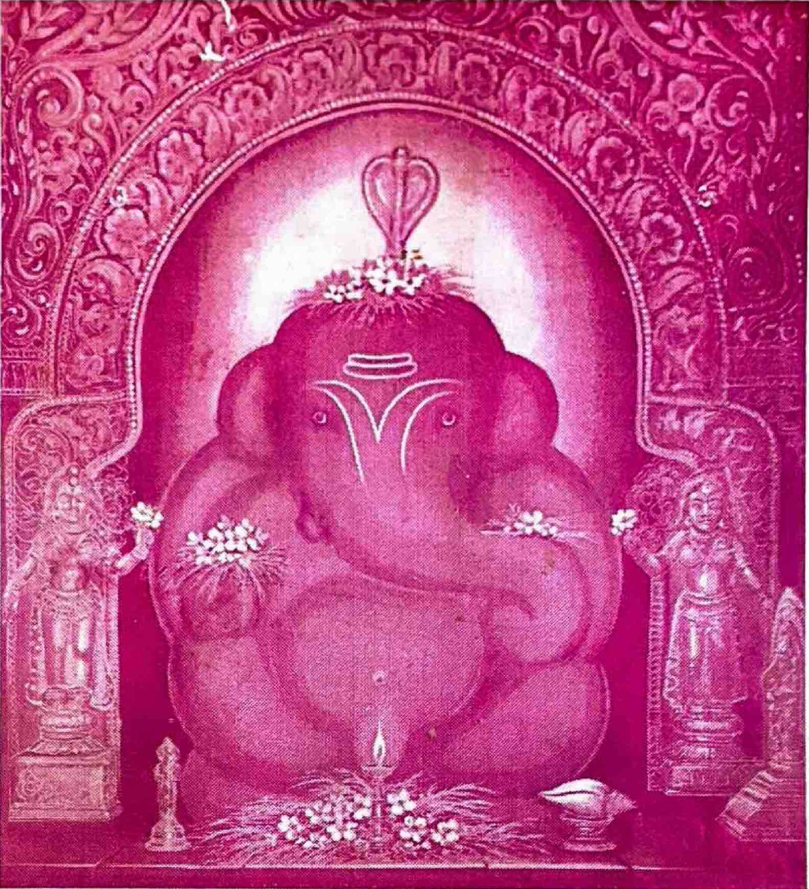
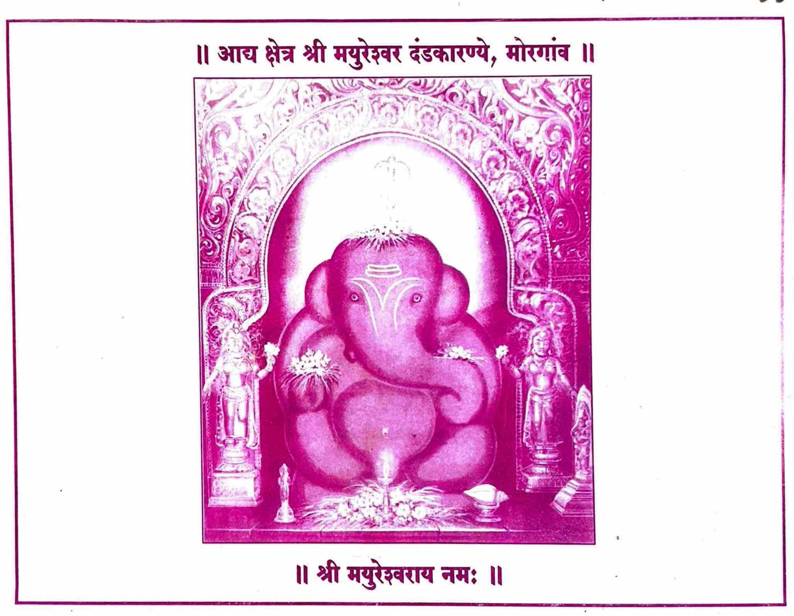
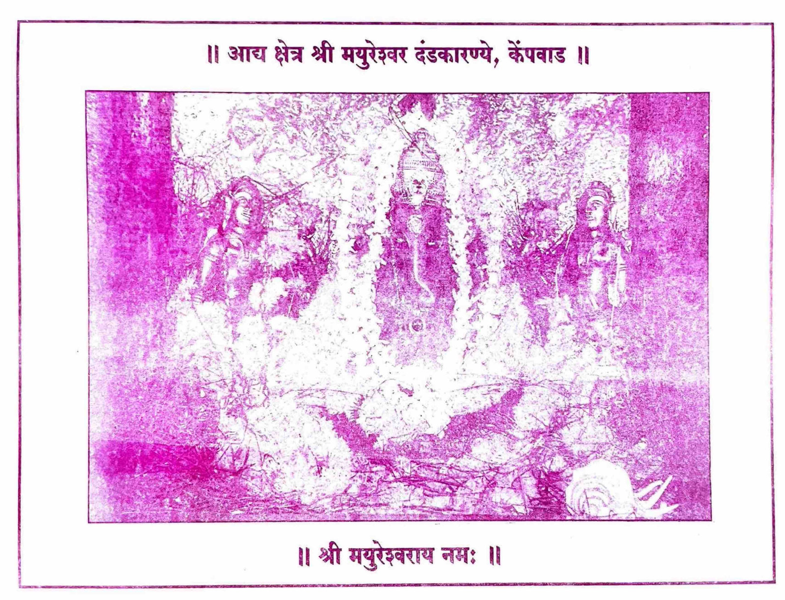
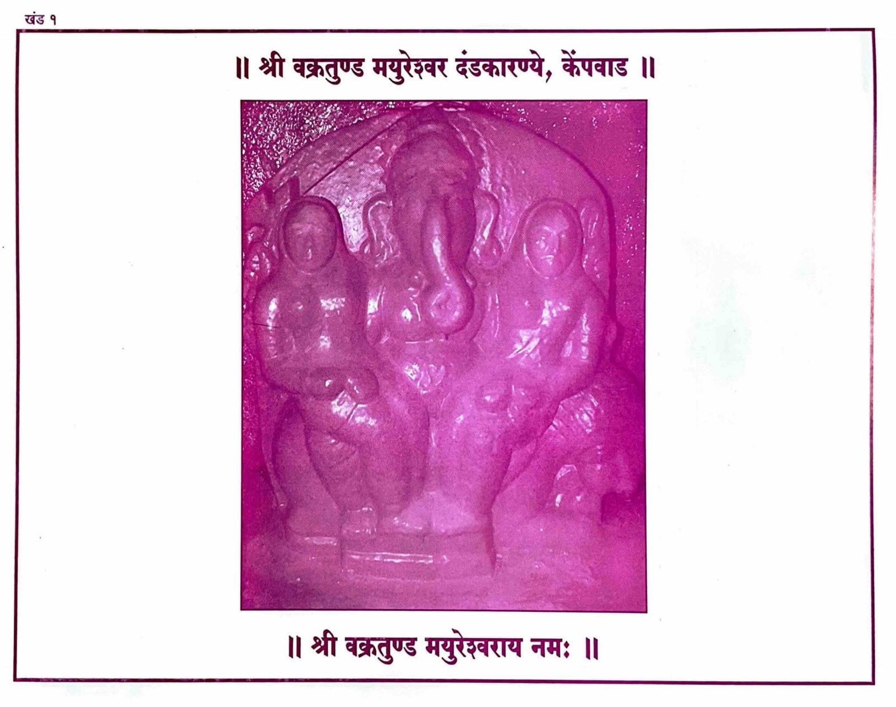
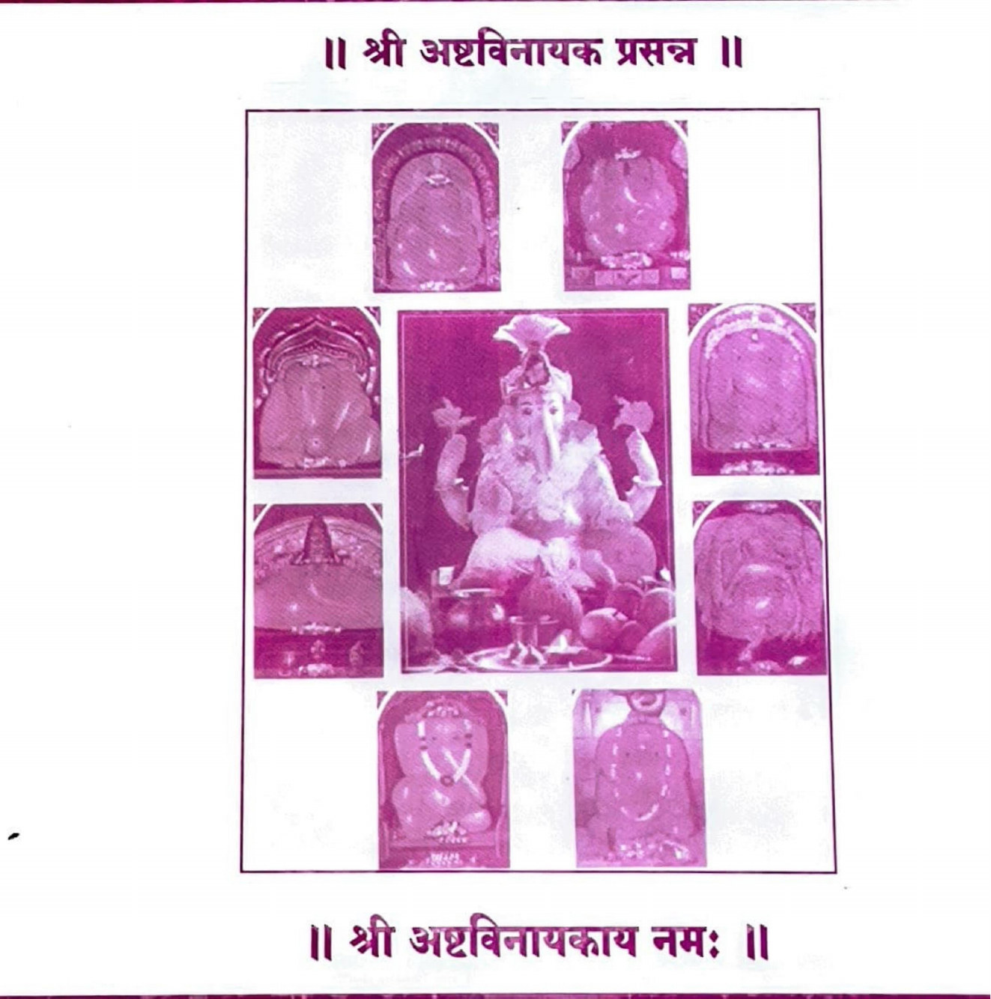

॥ ಶ್ರೀಭೂಸ್ವಾನನ್ದನಾಥೋ ಮಯೂರೇಶೋ ಜಯತಿ ॥
ಶ್ರೀಭೂಸ್ವಾನಂದದ ನಾಥನಾದ ಮಯೂರೇಶನಿಗೆ ಜಯವಾಗಲಿ.

॥ ಸಿಂದೂರಲಿಪ್ತಸರ್ವಾಙ್ಗಂ ಸಿದ್ಧಿಬುದ್ಧಿಸಮನ್ವಿತಮ್ ॥ ಭೂಸ್ವಾನಂದಸ್ಥಿತಂ ಧ್ಯಾಯೇ ಭಕ್ತಾನಾಂ ವರದಾಯಕಮ್ ॥
ಸಿಂಧೂರದಿಂದ ಸರ್ವಾಂಗವೂ ಅಲಂಕೃತನಾದ, ಸಿದ್ಧಿ ಮತ್ತು ಬುದ್ಧಿಯರೊಡನೆ ಇರುವ, ಭೂಸ್ವಾನಂದದಲ್ಲಿ ನೆಲೆಸಿರುವ, ಭಕ್ತರಿಗೆ ವರಗಳನ್ನು ನೀಡುವ ಗಣೇಶನನ್ನು ಧ್ಯಾನಿಸುತ್ತೇನೆ.
॥ ಶ್ರೀ ಮುದ್ಗಲ ಪುರಾಣ ॥
॥ ಶ್ರವಣ ಮೂಲಮ್ ಮುದ್ಗಲ ಪುರಾಣ ಪವಿತ್ರಮ್ ॥
ಶ್ರವಣಕ್ಕೆ ಮೂಲವಾದ ಮುದ್ಗಲ ಪುರಾಣವು ಪವಿತ್ರವಾಗಿದೆ.
॥ ಮಂತ್ರ ಮೂಲಮ್ ಗಣೇಶ ನಾಮ ಪವಿತ್ರಮ್ ॥
ಮಂತ್ರಕ್ಕೆ ಮೂಲವಾದ ಗಣೇಶನ ನಾಮವು ಪವಿತ್ರವಾಗಿದೆ.
॥ ಪೂಜ್ಯ ಮೂಲಮ್ ಗಣೇಶ ಪಾದ ಪವಿತ್ರಮ್ ॥
ಪೂಜ್ಯತೆಯ ಮೂಲವಾದ ಗಣೇಶನ ಪಾದಗಳು ಪವಿತ್ರವಾಗಿವೆ.
॥ ಧ್ಯಾನ ಮೂಲಮ್ ಗಣೇಶ ಮೂರ್ತೀ ಪವಿತ್ರಮ್ ॥
ಧ್ಯಾನಕ್ಕೆ ಮೂಲವಾದ ಗಣೇಶನ ಮೂರ್ತಿಯು ಪವಿತ್ರವಾಗಿದೆ.
॥ ಮುಕ್ತೀ ಮೂಲಮ್ ಗಣೇಶ ಕೃಪಾಃ ಪವಿತ್ರಮ್ ॥
ಮುಕ್ತಿಗೆ ಮೂಲವಾದ ಗಣೇಶನ ಕೃಪೆಯು ಪವಿತ್ರವಾಗಿದೆ.
| ಅಧ್ಯಾಯ | ವಿಷಯ | ಪುಟಸಂಖ್ಯೆ |
|---|---|---|
| ४ | ಮಧು–ಕೈಟಭರ ವಧೆ | ८–११ |
| ५ | ಸ್ವಾಯಂಭುವನಿಗೆ ವರಪ್ರದಾನ | ११–१३ |
| ६ | ದಕ್ಷನ ಕನ್ಯೆಯರ ವಂಶವರ್ಣನೆ | १४–१६ |
| ७ | ಮೋಹ ಮತ್ತು ಮೋಕ್ಷದ ವರ್ಣನೆ | १६–१८ |
| ८ | ದತ್ತನ ಚರಿತ್ರೆ | १८–२२ |
| ९ | ಪ್ರಿಯವ್ರತನ ರಾಜ್ಯಪ್ರಾಪ್ತಿಯ ವರ್ಣನೆ | २२–२४ |
| १० | ದ್ವೀಪಗಳ ವರ್ಣನೆ | २४–२६ |
| ११ | ಭೂಗೋಳದ ವರ್ಣನೆ | २६–२८ |
| १२ | ಸೂರ್ಯಮಂಡಲದ ವರ್ಣನೆ | २८–३० |
| १३ | ನವಗ್ರಹಗಳ ರಥ ಮೊದಲಾದವುಗಳ ವರ್ಣನೆ | ३०–३१ |
| १४ | ಮೇಲಿನ ಲೋಕಗಳ ವರ್ಣನೆ | ३२–३३ |
| १५ | ಸಪ್ತಪಾತಾಳಗಳ ವರ್ಣನೆ | ३३–३५ |
| १६ | ಋಷಭನ ಚರಿತ್ರೆಯ ವರ್ಣನೆ | ३५–३७ |
| १७ | ಪುಲಹನ ಉಪದೇಶದ ವರ್ಣನೆ | ३८–४० |
| १८ | ಭರತಮೃಗನ ದೇಹತ್ಯಾಗ | ४०–४१ |
| १९ | ಕಳ್ಳನ ವಧೆ | ४२–४३ |
| २० | ಜಡಭರತ–ರಹೂಗಣರ ಭೇಟಿ | ४३–४५ |
| २१ | ರಹೂಗಣನ ಸಿದ್ಧಿ ಮೊದಲಾದವುಗಳ ವರ್ಣನೆ | ४५–४६ |
| २२ | ಜಡಭರತನ ಚರಿತ್ರೆ | ४६–४७ |
| २३ | ಧ್ರುವನ ಚರಿತ್ರೆ | ४८–४९ |
| २४ | ಪೃಥುವಿನ ಯಶಸ್ಸಿನ ವರ್ಣನೆ | ४९–५१ |
| २५ | ಪೃಥುವಿನ ಚರಿತ್ರೆ | ५१–५४ |
| २६ | ಪ್ರಾಚೀನಬರ್ಹಿಷನ ಚರಿತ್ರೆ | ५४–५६ |
| २७ | ಪ್ರಚೇತಸರ ಚರಿತ್ರೆ | ५६–५७ |
| २८ | ಕಶ್ಯಪನ ಸೃಷ್ಟಿಯ ವರ್ಣನೆ | ५८–५९ |
| २९ | ವಸಿಷ್ಠನ ತಪಸ್ಸಿನ ವರ್ಣನೆ | ६०–६२ |
| ३० | ಪರಾಶರನಿಗೆ ವರಪ್ರದಾನ | ६२–६३ |
| ३१ | ಪರಾಶರನ ಪುತ್ರನ ಉತ್ಪತ್ತಿಯ ಕಥನ | ६४–६६ |
| ३२ | ಗಜಾಸುರನ ಸೇನೆಯ ವಧೆ | ६६–६८ |
| ३३ | ಗಜಾಸುರವಧೆಯ ಆಖ್ಯಾನ | ६९–७१ |
| ३४ | ವ್ಯಾಸಮಾಹಾತ್ಮ್ಯ | ७१–७३ |
| ३५ | ಶುಕನ ಉಪಾಖ್ಯಾನ | ७३–७५ |
| ३६ | ಗೌತಮನ ಚರಿತ್ರೆ | ७५–७९ |
| ३७ | ನರಸಿಂಹಮಾಹಾತ್ಮ್ಯ | ७९–८० |
| ३८ | ವರಾಹಮಾಹಾತ್ಮ್ಯ | ८१–८१ |
| ३९ | ಚ್ಯವನನ ಉತ್ಪತ್ತಿಯ ಕಥನ | ८२–८४ |
| ४० | ಅಗ್ನಿಮಾಹಾತ್ಮ್ಯ | ८४–८६ |
| ४१ | ಚ್ಯವನನ ತಪಸ್ಸಿನ ವರ್ಣನೆ | ८६–८८ |
| ४२ | ಭೃಗುವಿನ ಚರಿತ್ರೆ | ८९–९१ |
| ४३ | ಚ್ಯವನಮಾಹಾತ್ಮ್ಯ | ९२–९२ |
| ४४ | ಮದಾಸುರನ ರಾಜ್ಯಾಭಿಷೇಕ | ९३–९४ |
| ४५ | ಮದಾಸುರನ ಸರ್ವವಿಜಯ | ९५–९६ |
| ४६ | ತಾರಕಾಸುರನ ಉದ್ಭವದ ವರ್ಣನೆ | ९७–९८ |
| ४७ | ಇಂದ್ರ–ತಾರಕರ ಭೇಟಿ | ९९–१०१ |
| ४८ | ಇಂದ್ರನ ಪರಾಜಯ | १०१–१०२ |
| ४९ | ಶಿವ ಮೊದಲಾದ ದೇವತೆಗಳ ಪರಾಜಯ | १०३–१०५ |
| ५० | ಮದಾಸುರನ ವಿಜಯ | १०५–१०७ |
| ५१ | ಸನತ್ಕುಮಾರ–ದೇವರ ಭೇಟಿ | १०७–१०८ |
| ५२ | ಏಕದಂತನ ಪ್ರಾಕಟ್ಯ | १०९–११० |
| ५३ | ಮದಾಸುರನ ಪರಾಜಯ | १११–११३ |
| ५४ | ಮದಾಸುರನ ಶಾಂತಿ ಮೊದಲಾದವುಗಳ ವರ್ಣನೆ | ११३–११४ |
| ५५ | ಮದಾಸುರಚರಿತ್ರೆಯ ಸಮಾಪ್ತಿ | ११४–११६ |
| ५६ | ವಿನಾಯಕನ ಕಾಶೀಪ್ರವೇಶ | ११७–११९ |
| ५७ | ಭೃಶುಂಡಿಯ ಭಕ್ತಿಯ ವರ್ಣನೆ | ११९–१२२ |
| ५८ | ಯಮನ ಶಾಪದ ವರ್ಣನೆ | १२२–१२४ |
| ५९ | ಕುಂಡಸಂಭವನ ಚರಿತ್ರೆ | १२४–१२६ |
| ६० | ಭೃಶುಂಡಿಯ ಬ್ರಾಹ್ಮಣತ್ವದ ವರ್ಣನೆ | १२६–१२९ |
| ६१ | ಭೃಶುಂಡಿಯ ಚರಿತ್ರೆ | १२९–१२९ |
| ६२ | ವಿನಾಯಕನ ಚರಿತ್ರೆ | १३०–१३२ |
| ६३ | ಶಕ್ತಿಯ ಸಮಾಗಮ | १३२–१३४ |
| ६४ | ವಿಷ್ಣುವಿನ ದೌತ್ಯದ ವರ್ಣನೆ | १३४–१३६ |
| ६५ | ಪುಷ್ಟಿಪತಿಯ ಉಪಾಖ್ಯಾನದಲ್ಲಿ ಅಗಸ್ತ್ಯನ ದ್ರವ್ಯಪ್ರಯತ್ನ | १३६–१३८ |
| ६६ | ಕೃಷ್ಣ–ರಾಧೆಯ ಶಾಪಪ್ರಸಂಗದ ವರ್ಣನೆ | १३८–१४१ |
| ६७ | ರಾಧಾ–ಕೃಷ್ಣ ಮತ್ತು ಗೋಲೋಕ ಮೊದಲಾದವುಗಳ ವರ್ಣನೆ | १४१–१४३ |
| ६८ | ಪುಷ್ಟಿಪತಿಯ ಚರಿತ್ರೆ | १४३–१४४ |
| ಅಧ್ಯಾಯ | ವಿಷಯ | ಪುಟಸಂಖ್ಯೆ |
|---|---|---|
| ६९ | ದೇವಹೂತಿ–ಕರ್ದಮರ ಶಾಂತಿಪ್ರಾಪ್ತಿಯ ವರ್ಣನೆ | १४४–१४६ |
| ७० | ಚಿಂತಾಮಣಿಯ ಹರಣ | १४७–१४८ |
| ७१ | ಕಪಿಲನಿಗೆ ವರಪ್ರದಾನ | १४९–१५१ |
| ७२ | ಗಣಾಸುರನ ವಧೆ | १५१–१५३ |
| ७३ | ಗೃತ್ಸಮದ–ಪ್ರಹ್ಲಾದರ ಸಂವಾದದ ಸಮಾಪ್ತಿಯ ವರ್ಣನೆ | १५३–१५५ |
| ७४ | ಚರಿತ್ರಮಾಹಾತ್ಮ್ಯ | १५५–१५६ |
| ಖಂಡ ३ — ಮಹೋದರ ಚರಿತ್ರೆ | ||
| १ | ರವಿ–ವಾಲಖಿಲ್ಯರ ಶಾಪದ ವರ್ಣನೆ | १–२ |
| २ | ಸೂರ್ಯನಿಗೆ ಸಂಜೀವನಪ್ರದಾನ | २–५ |
| ३ | ಸೂರ್ಯನಿಗೆ ವರಪ್ರದಾನ | ५–७ |
| ४ | ಕಾಮನ ಚರಿತ್ರೆ | ८–१० |
| ५ | ಸ್ಕಂದಮಾಹಾತ್ಮ್ಯ | १०–१२ |
| ६ | ಮೋಹಾಸುರನ ರಾಜ್ಯಾಭಿಷೇಕದ ವರ್ಣನೆ | १३–१४ |
| ७ | ಮೋಹಾಸುರನ ವಿಜಯದ ವರ್ಣನೆ | १५–१६ |
| ८ | ದೇವರ್ಷಿಗೆ ವರಪ್ರದಾನ | १७–१८ |
| ९ | ಮೋಹಾಸುರನಿಗೆ ಜ್ಞಾನಪ್ರದಾನ | १९–२१ |
| १० | ಮೋಹಾಸುರನ ಶಾಂತಿಯ ವರ್ಣನೆ | २१–२३ |
| ११ | ಮಹೋದರನ ಅಂತರ್ಧಾನ | २३–२५ |
| १२ | ನರ–ನಾರಾಯಣ–ವಿಷ್ಣು ಸಂವಾದ | २५–२७ |
| १३ | ನರ–ನಾರಾಯಣ–ಮಾರ್ಕಂಡೇಯರ ಸಮಾಗಮ | २७–२९ |
| १४ | ಮಾಯೆಯ ವರ್ಣನೆ | २९–३० |
| १५ | ಕಾಲಗತಿಯ ವರ್ಣನೆ | ३०–३२ |
| १६ | ಯುಗಧರ್ಮದ ವರ್ಣನೆ | ३२–३३ |
| १७ | ಕಲಿಯುಗದ ವರ್ಣನೆ | ३४–३६ |
| १८ | ಬ್ರಹ್ಮಚರ್ಯಾಶ್ರಮದ ವರ್ಣನೆ | ३६–३७ |
| १९ | ಆಶ್ರಮಧರ್ಮದ ವರ್ಣನೆ | ३८–४० |
| २० | ವರ್ಣಧರ್ಮದ ಪ್ರಕಾರಗಳು | ४०–४२ |
| २१ | ದೇವ–ಪಿತೃಧರ್ಮದ ವರ್ಣನೆ | ४२–४३ |
| २२ | ಮಾಂಧಾತೃವಿನ ಚರಿತ್ರೆ | ४४–४६ |
| २३ | ಅಂಬರೀಷನ ಚರಿತ್ರೆ | ४६–४७ |
| २४ | ಮುಚುಕುಂದನ ಚರಿತ್ರೆ | ४८–४९ |
| २५ | ಸಗರ–ಭಗೀರಥರ ಚರಿತ್ರೆ | ४९–५१ |
| २६ | ರಾಮಚಂದ್ರನ ಚರಿತ್ರೆ | ५२–५६ |
| २७ | ಸೂರ್ಯ–ವಾಲಖಿಲ್ಯರ ಸಂವಾದ ಮತ್ತು ಸಮಾಧಿಯ ವರ್ಣನೆ | ५६–५९ |
| २८ | ಬುಧನ ಉತ್ಪತ್ತಿಯ ವರ್ಣನೆ | ५९–६१ |
| २९ | ಪುರೂರವಸನ ಚರಿತ್ರೆಯ ಕಥನ | ६१–६३ |
| ३० | ನಹುಷನ ಚರಿತ್ರೆ | ६३–६६ |
| ३१ | ಯಯಾತಿಯ ಚರಿತ್ರೆ | ६७–७० |
| ३२ | ಧನಕನಿಗೆ ವ್ರತೋಪದೇಶ | ७०–७२ |
| ३३ | ಕೃತವೀರ್ಯನ ವ್ರತಮಹಿಮೆಯ ವರ್ಣನೆ | ७३–७४ |
| ३४ | ಕೃತವೀರ್ಯನ ಚರಿತ್ರೆ | ७४–७६ |
| ३५ | ಸಹಸ್ರಾರ್ಜುನನ ನಿಮಂತ್ರಣ | ७७–७९ |
| ३६ | ರೇಣುಕಾ–ಜಮದಗ್ನಿಯರನ್ನು ಮತ್ತೆ ಜೀವಂತಗೊಳಿಸುವುದು | ७९–८१ |
| ३७ | ಪರಶುರಾಮನ ಚರಿತ್ರೆಯ ಕಥನ | ८१–८४ |
| ३८ | ಹರಿವಂಶದ ವರ್ಣನೆ | ८४–८६ |
| ३९ | ವಿಷ್ಣುವಿನ ದೇಹಧಾರಣೆಯ ವರ್ಣನೆ | ८६–८८ |
| ४० | ಮಾಂಡವ್ಯನ ಚರಿತ್ರೆ | ८८–९० |
| ४१ | ಯುಧಿಷ್ಠಿರ–ಕೃಷ್ಣರ ಸಮಾಗಮ | ९१–९२ |
| ४२ | ಲಕ್ಷ್ಮೀ–ನಾರಾಯಣರ ಸಂವಾದದ ವರ್ಣನೆ | ९२–९३ |
| ४३ | ಮಹಾಲಕ್ಷ್ಮಿಯ ವರಪ್ರದಾನ ಪ್ರಸಂಗದ ವರ್ಣನೆ | ९४–९६ |
| ४४ | ಜ್ಞಾನಾರಿಯ ವರಪ್ರಾಪ್ತಿಯ ವರ್ಣನೆ | ९६–९७ |
| ४५ | ಪೂರ್ಣಾನಂದನ ಅವತಾರದ ವರ್ಣನೆ | ९७–९८ |
| ४६ | ಬ್ರಹ್ಮಯಜ್ಞದ ವರ್ಣನೆ | ९९–१०१ |
| ४७ | ಬ್ರಹ್ಮಯಜ್ಞದಲ್ಲಿ ವೇದನಿರ್ಣಯದ ವರ್ಣನೆ | १०१–१०४ |
| ४८ | ಶುಕ್ರಶಿಷ್ಯ–ಸುಬೋಧರ ಸಂವಾದ | १०४–१०६ |
| ४९ | ಸುಬೋಧನ ಭಕ್ತಿಯ ವರ್ಣನೆ | १०६–१०८ |
| ५० | ಯುಧಿಷ್ಠಿರನ ಚರಿತ್ರೆ | १०८–११० |
| ५१ | ಶ್ರವಣಫಲದ ವರ್ಣನೆ | १११–११२ |
| ಖಂಡ ४ — ಗಜಾನನ ಚರಿತ್ರೆ | ||
| १ | ಚತುರ್ಥಿಯ ತಪಸ್ಸಿನ ವರ್ಣನೆ | १–३ |
| २ | ಶುಕ್ಲ–ಕೃಷ್ಣ ಚತುರ್ಥಿಗಳಿಗೆ ವರಪ್ರದಾನದ ವರ್ಣನೆ | ३–५ |
| ३ | ಪ್ರತಿಪತ್ ಮೊದಲಾದ ತಿಥಿಗಳ ವ್ರತಗಳ ವರ್ಣನೆ | ६–७ |
| ४ | ದಶರಥನಿಗೆ ವ್ರತೋಪದೇಶ | ८–९ |
| ५ | ಚತುರ್ಥಿಯ ವಿವೇಕದ ವರ್ಣನೆ | ९–१० |
| ಅಧ್ಯಾಯ | ವಿಷಯ | ಪುಟಸಂಖ್ಯೆ |
|---|---|---|
| ६ | ಚಂದ್ರದರ್ಶನದೋಷಹರಣದ ಚರಿತ್ರೆ | ११–२० |
| ७ | ಭಾದ್ರಪದ ಶುಕ್ಲ ಚತುರ್ಥೀವ್ರತದ ವರ್ಣನೆ | २०–२४ |
| ८ | ಆಶ್ವಿನ ಶುಕ್ಲ ಚತುರ್ಥೀವ್ರತದ ವರ್ಣನೆ | २४–२७ |
| ९ | ಕಾರ್ತಿಕ ಶುಕ್ಲ ಚತುರ್ಥೀವ್ರತದ ವರ್ಣನೆ | २७–३० |
| १० | ಮಾರ್ಗಶೀರ್ಷ ಶುಕ್ಲ ಚತುರ್ಥೀವ್ರತದ ವರ್ಣನೆ | ३१–३२ |
| ११ | ಪೌಷ ಶುಕ್ಲ ಚತುರ್ಥಿಯ ಮಾಹಾತ್ಮ್ಯದ ವರ್ಣನೆ | ३२–३६ |
| १२ | ಮಾಘ ಶುಕ್ಲ ಚತುರ್ಥಿಯ ಮಾಹಾತ್ಮ್ಯದ ವರ್ಣನೆ | ३६–३८ |
| १३ | ಫಾಲ್ಗುನ ಶುಕ್ಲ ಚತುರ್ಥೀವ್ರತದ ಚರಿತ್ರೆಯ ವರ್ಣನೆ | ३९–४१ |
| १४ | ಚೈತ್ರ ಶುಕ್ಲ ಚತುರ್ಥೀವ್ರತದ ವರ್ಣನೆ | ४२–४४ |
| १५ | ವೈಶಾಖ ಶುಕ್ಲ ಚತುರ್ಥಿಯ ಮಾಹಾತ್ಮ್ಯದ ವರ್ಣನೆ | ४४–४७ |
| १६ | ಜ್ಯೇಷ್ಠ ಶುಕ್ಲ ಚತುರ್ಥಿಯ ಮಾಹಾತ್ಮ್ಯದ ವರ್ಣನೆ | ४७–४९ |
| १७ | ಆಷಾಢ ಶುಕ್ಲ ಚತುರ್ಥೀವ್ರತದ ಚರಿತ್ರೆಯ ವರ್ಣನೆ | ५०–५२ |
| १८ | ಶ್ರಾವಣ ಶುಕ್ಲ ಚತುರ್ಥೀವ್ರತದ ಚರಿತ್ರೆಯ ಕಥನ | ५२–५५ |
| १९ | ಮಲಮಾಸ ಶುಕ್ಲ ಚತುರ್ಥೀವ್ರತದ ಚರಿತ್ರೆಯ ಕಥನ | ५५–५७ |
| २० | ಮಾಘ ಕೃಷ್ಣ ಚತುರ್ಥಿಯ ಮಾಹಾತ್ಮ್ಯದ ವರ್ಣನೆ | ५७–६१ |
| २१ | ಫಾಲ್ಗುನ ಕೃಷ್ಣ ಚತುರ್ಥಿಯ ವರ್ಣನೆ | ६१–६३ |
| २२ | ಚೈತ್ರ ಕೃಷ್ಣ ಚತುರ್ಥೀವ್ರತದ ಚರಿತ್ರೆಯ ವರ್ಣನೆ | ६३–६५ |
| २३ | ವೈಶಾಖ ಕೃಷ್ಣ ಚತುರ್ಥೀವ್ರತದ ಚರಿತ್ರೆಯ ವರ್ಣನೆ | ६५–६७ |
| २४ | ಜ್ಯೇಷ್ಠ ಕೃಷ್ಣ ಚತುರ್ಥಿಯ ವರ್ಣನೆ | ६८–७० |
| २५ | ಆಷಾಢ ಕೃಷ್ಣ ಚತುರ್ಥಿಯ ವರ್ಣನೆ | ७०–७२ |
| २६ | ಶ್ರಾವಣ ಕೃಷ್ಣ ಚತುರ್ಥಿಯ ಮಾಹಾತ್ಮ್ಯದ ವರ್ಣನೆ | ७२–७४ |
| २७ | ಭಾದ್ರಪದ ಕೃಷ್ಣ ಚತುರ್ಥಿಯ ಮಾಹಾತ್ಮ್ಯದ ವರ್ಣನೆ | ७५–७७ |
| २८ | ಆಶ್ವಿನ ಕೃಷ್ಣ ಚತುರ್ಥಿಯ ಮಾಹಾತ್ಮ್ಯದ ವರ್ಣನೆ | ७८–८० |
| २९ | ಕಾರ್ತಿಕ ಕೃಷ್ಣ ಚತುರ್ಥಿಯ ಮಾಹಾತ್ಮ್ಯದ ವರ್ಣನೆ | ८०–८३ |
| ३० | ಮಾರ್ಗಶೀರ್ಷ ಕೃಷ್ಣ ಚತುರ್ಥಿಯ ಮಾಹಾತ್ಮ್ಯದ ವರ್ಣನೆ | ८३–८५ |
| ३१ | ಪೌಷ ಕೃಷ್ಣ ಚತುರ್ಥಿಯ ಮಾಹಾತ್ಮ್ಯದ ವರ್ಣನೆ | ८५–८७ |
| ३२ | ಮಲಮಾಸ ಕೃಷ್ಣಪಕ್ಷ ಚತುರ್ಥಿಯ ವರ್ಣನೆ | ८८–९० |
| ३३ | ಶಮೀವೃಕ್ಷದ ಬುಡದಲ್ಲಿ ಚತುರ್ಥೀವ್ರತಾಚರಣೆಯ ವರ್ಣನೆ | ९०–९१ |
| ३४ | ವಸಿಷ್ಠ–ದಶಾರ್ಣ ಸಂವಾದದ ಸಮಾಪ್ತಿಯ ವರ್ಣನೆ | ९२–९२ |
| ३५ | ಚತುರ್ಥಿಯ ಉದ್ಯಾಪನೆಯ ನಿರೂಪಣೆ | ९३–९४ |
| ३६ | ಲೋಭಾಸುರನ ರಾಜ್ಯಾಭಿಷೇಕದ ವರ್ಣನೆ | ९४–९६ |
| ३७ | ಲೋಭಾಸುರನ ಇಂದ್ರಪದಪ್ರಾಪ್ತಿಯ ವರ್ಣನೆ | ९६–९८ |
| ३८ | ವಿಷ್ಣುವಿನ ಪರಾಜಯ | ९८–१०० |
| ३९ | ಲೋಭಾಸುರನ ಬ್ರಹ್ಮಾಂಡವಿಜಯ | १००–१०२ |
| ४० | ಗಜಾನನನ ಪ್ರಾದುರ್ಭಾವ | १०२–१०४ |
| ४१ | ಶುಕನ ಉಪದೇಶದ ವರ್ಣನೆ | १०४–१०७ |
| ४२ | ಲೋಭಾಸುರನ ಶಾಂತಿಯ ವರ್ಣನೆ | १०७–१०८ |
| ४३ | ದೇವಮುನಿಗಳು ಮಾಡಿದ ಸ್ತುತಿಯ ವರ್ಣನೆ | १०९–१११ |
| ४४ | ಸಿಂದೂರ–ಶಿವರ ಸಮಾಗಮ | १११–११३ |
| ४५ | ಶಿವಚಿಂತೆಯ ವರ್ಣನೆಯ ಪ್ರಸಂಗ | ११३–११५ |
| ४६ | ಶಕ್ತಿಯ ಬಲಮಹಿಮೆಯ ವರ್ಣನೆ | ११५–११७ |
| ४७ | ಗಣೇಶನ ಸತ್ತೆಗೆ ಅಧೀನವಾಗಿರುವುದರ ವರ್ಣನೆ | ११७–१२० |
| ४८ | ಸಿಂದೂರನ ವಧೆ | १२०–१२२ |
| ४९ | ಗಣೇಶನ ನಿರ್ಮಾಲ್ಯದ ಮಾಹಾತ್ಮ್ಯದ ವರ್ಣನೆ | १२२–१२३ |
| ५० | ವಿಘ್ನಾಸುರನ ಆಶ್ರಮಕ್ಕೆ ಗಮನ | १२४–१२५ |
| ५१ | ವಿಘ್ನರಾಜನ ಅವತಾರದ ವರ್ಣನೆ | १२६–१२८ |
| ५२ | ಗಜಾನನಚರಿತ್ರೆಯ ಮಾಹಾತ್ಮ್ಯದ ವರ್ಣನೆ | १२८–१२९ |
| ಖಂಡ ५ — ಲಂಬೋದರ ಚರಿತ್ರೆ | ||
| १ | ಅಸಿತ–ನೈಧ್ರುವರ ಸಂವಾದದಲ್ಲಿ ಮೂರು ವಿಧದ ತಪಸ್ಸಿನ ವರ್ಣನೆ | १–३ |
| २ | ಭಸ್ಮಾಸುರನ ವಧೆ | ३–५ |
| ३ | ಕ್ರೋಧಾಸುರನ ರಾಜ್ಯಪ್ರಾಪ್ತಿಯ ವರ್ಣನೆ | ५–७ |
| ४ | ಕ್ರೋಧಾಸುರನ ಬ್ರಹ್ಮಾಂಡವಿಜಯ | ७–९ |
| ५ | ದೇವರ್ಷಿಗೆ ವರಪ್ರದಾನ | ९–११ |
| ६ | ದೇವ–ಅಸುರರ ಯುದ್ಧದ ವರ್ಣನೆ | ११–१३ |
| ७ | ಕ್ರೋಧಾಸುರನ ಸಮಾಗಮ | १३–१५ |
| ८ | ಕ್ರೋಧಾಸುರನ ಶಾಂತಿಯ ವರ್ಣನೆ | १५–१७ |
| ९ | ದೇವರ್ಷಿಗಳು ಲಂಬೋದರನನ್ನು ಸ್ತುತಿಸಿದುದರ ವರ್ಣನೆ | १७–१९ |
| १० | ವತ್ಸರ–ಅಸಿತರ ಶಾಂತಿಯ ವರ್ಣನೆ | २०–२१ |
| ११ | ಲಂಬೋದರನ ಪ್ರಭವದ ವರ್ಣನೆ | २१–२२ |
| १२ | ಶಕ್ತಿಯ ಸ್ವರೂಪಾವತಾರದ ವರ್ಣನೆ | २३–२५ |
| १३ | ಶಕ್ತಿಗೆ ವರಪ್ರದಾನ | २६–२८ |
| १४ | ಶಿವ–ವಿಷ್ಣುಗಳ ಗರ್ವಹರಣ | २९–३१ |
| १५ | ಶಕ್ತಿ–ವಿನಾಯಕ ಮಾಹಾತ್ಮ್ಯ | ३१–३३ |
| १६ | ಶೇಷ ಮೊದಲಾದವರ ದುಃಖದ ವರ್ಣನೆ | ३३–३५ |
| १७ | ಶೇಷನಿಗೆ ಯೋಗೋಪದೇಶದ ವರ್ಣನೆ | ३५–३७ |
| ಅಧ್ಯಾಯ | ವಿಷಯ | ಪುಟಸಂಖ್ಯೆ |
|---|---|---|
| १८ | ಶೇಷನ ಆಖ್ಯಾನದ ವರ್ಣನೆ | ३७–४० |
| १९ | ಮೂಷಕ–ದೇವರ ಭೇಟಿ | ४०–४२ |
| २० | ಮೂಷಕಗ–ಮಾಯಾಕರಾಸುರರ ಭೇಟಿ | ४३–४४ |
| २१ | ಮೂಷಕಗಾವತಾರದ ಚರಿತ್ರೆ | ४५–४७ |
| २२ | ಶಕ್ತಿಪುತ್ರನ ಚರಿತ್ರೆ | ४७–४८ |
| २३ | ಗಾಣಪತ್ಯದೀಕ್ಷೆಯ ವರ್ಣನೆ | ४८–५० |
| २४ | ಗಾಣಪತ್ಯಸ್ವರೂಪದ ವರ್ಣನೆ | ५०–५३ |
| २५ | ಶಮೀ–ಮಂದಾರಗಳಿಗೆ ವರಪ್ರದಾನ | ५३–५६ |
| २६ | ಶಮೀ–ಮಂದಾರಗಳ ಸ್ಪರ್ಶಮಹಿಮೆಯ ವರ್ಣನೆ | ५६–५८ |
| २७ | ದುರ್ವೆಯ ಉತ್ಪತ್ತಿಯ ಕಥನ | ५९–६१ |
| २८ | ದುರ್ವಾಪತ್ರದ ಸ್ಪರ್ಶಮಹಿಮೆಯ ವರ್ಣನೆ | ६२–६३ |
| २९ | ತ್ರಿಶಿರಸ್ಸಿನ ಚರಿತ್ರೆಯ ವರ್ಣನೆ | ६३–६६ |
| ३० | ದುರ್ವಾಮಾಹಾತ್ಮ್ಯದ ವರ್ಣನೆ | ६६–७४ |
| ३१ | ತುಳಸಿಯನ್ನು ವರ್ಜಿಸುವುದಕ್ಕೆ ಕಾರಣ | ७५–७७ |
| ३२ | ತುಳಸಿಗೆ ವರಪ್ರದಾನ | ७७–७८ |
| ३३ | ತುಳಸೀಪತ್ರದ ಸಮರ್ಪಣೆಯನ್ನು ವರ್ಜಿಸುವುದರ ವರ್ಣನೆ | ७९–८० |
| ३४ | ರುಕ್ಮಾಂಗದನ ಚರಿತ್ರೆ | ८०–८२ |
| ३५ | ಗೃತ್ಸಮದ–ಗಣೇಶರ ಭೇಟಿ | ८३–८४ |
| ३६ | ಗೃತ್ಸಮದನಿಗೆ ವರಪ್ರದಾನ | ८५–८६ |
| ३७ | ಗೃತ್ಸಮದನಿಗೆ ನಿತ್ಯಕರ್ಮದ ವರ್ಣನೆ | ८७–८८ |
| ३८ | ಗೃತ್ಸಮದನು ಹೇಳಿದ ಮಾನಸಪೂಜೆಯ ಕಥನ | ८८–९२ |
| ३९ | ಗೃತ್ಸಮದನು ಹೇಳಿದ ಬಾಹ್ಯಪೂಜೆಯ ವರ್ಣನೆ | ९३–९५ |
| ४० | ಸ್ವಾನಂದಲೋಕದ ವರ್ಣನೆ | ९६–९८ |
| ४१ | ಸ್ವಾನಂದದಲ್ಲಿನ ಸ್ಥಿತಿಯ ವರ್ಣನೆ | ९९–१०१ |
| ४२ | ಚಿಂತಾಮಣಿಯ ಅಂತರ್ಧಾನದ ವರ್ಣನೆ | १०२–१०३ |
| ४३ | ಭಕ್ತಿಮಾರ್ಗದ ವರ್ಣನೆ | १०४–१०५ |
| ४४ | ಧ್ಯಾನ ಮತ್ತು ದುರ್ವೆ ಮೊದಲಾದವುಗಳಿಂದ ಪೂಜಿಸುವ ವಿಧಿಯ ವರ್ಣನೆ | १०६–१०८ |
| ४५ | ಲಂಬೋದರಚರಿತ್ರೆಯ ಶ್ರವಣಮಾಹಾತ್ಮ್ಯದ ವರ್ಣನೆ | १०८–११० |
| ಖಂಡ ६ — ವಿಕಟಚರಿತ್ರೆ | ||
| १ | ಶಕ್ತಿಯ ಧ್ಯಾನದ ವರ್ಣನೆ | १–३ |
| २ | ಶಿವ–ವಿಷ್ಣುಗಳಿಗೆ ವರಪ್ರದಾನ | ३–५ |
| ३ | ಕಾಮಾಸುರನ ರಾಜ್ಯಪ್ರಾಪ್ತಿಯ ವರ್ಣನೆ | ६–७ |
| ४ | ಕಾಮಾಸುರನ ವಿಜಯದ ವರ್ಣನೆ | ८–९ |
| ५ | ಮುದ್ಗಲ–ದೇವರ ಭೇಟಿ | १०–११ |
| ६ | ಭೃಶುಂಡಿ ಮತ್ತು ಐದು ದೇವರ ಭೇಟಿ | १२–१३ |
| ७ | ಸ್ವಾನಂದಕ್ಷೇತ್ರದ ಸ್ವರೂಪದ ವರ್ಣನೆ | १४–१६ |
| ८ | ನಾನಾ ಕ್ಷೇತ್ರದೇವತೆಗಳ ಉತ್ಪತ್ತಿಯ ವರ್ಣನೆ | १६–१९ |
| ९ | ಮಯೂರೇಶನ ದ್ವಾರಯಾತ್ರಾವಿಧಿಯ ವರ್ಣನೆ | १९–२१ |
| १० | ದ್ವಾರರಹಸ್ಯದ ವರ್ಣನೆ | २१–२३ |
| ११ | ಕ್ಷೇತ್ರದ ಪ್ರಮಾಣದ ವರ್ಣನೆ | २३–२५ |
| १२ | ಮಯೂರೇಶಕ್ಷೇತ್ರವಾಸದ ಶುಭಾಶುಭಗಳ ವರ್ಣನೆ | २५–२८ |
| १३ | ಮಯೂರೇಶ–ಆನಂದ–ದಂಡಕಾರಣ್ಯ ವರಪ್ರದಾನ † | २८–३० |
| १४ | ದ್ವಾರಯಾತ್ರೆಯ ವರ್ಣನೆ | ३१–३३ |
| १५ | ದೇವಾಗಾರದ ದ್ವಾರಯಾತ್ರೆಯ ಮಾಹಾತ್ಮ್ಯ | ३३–३७ |
| १६ | ಗಣಗಳ ಯಾತ್ರಾಮಾಹಾತ್ಮ್ಯದ ವರ್ಣನೆ | ३८–४० |
| १७ | ಮಯೂರೇಶಕ್ಷೇತ್ರದಲ್ಲಿನ ಮರಣಪ್ರಾಪ್ತಿಯ ಮಹಿಮೆಯ ವರ್ಣನೆ | ४१–४३ |
| १८ | ಗರ್ಭಾಗಾರದ ಭ್ರಮಣದ ವರ್ಣನೆ | ४३–४६ |
| १९ | ಕ್ಷೇತ್ರವಾಸಿಯ ಚರಿತ್ರೆಯ ವರ್ಣನೆ | ४६–५५ |
| २० | ಮಲತ್ಯಾಗದಿಂದಾದ ಯಾತನೆಯ ಕಥನ | ५५–५७ |
| २१ | ಯಾತ್ರೆಗೆ ಪ್ರವೇಶಿಸುವ ಕಾಲ ಮೊದಲಾದವುಗಳ ವರ್ಣನೆ | ५८–६१ |
| २२ | ಕ್ಷೇತ್ರಸಂನ್ಯಾಸ ಮೊದಲಾದವುಗಳ ವರ್ಣನೆ | ६१–६७ |
| २३ | ಗಣೇಶಕುಂಡದ ಚರಿತ್ರೆಯ ವರ್ಣನೆ | ६७–६९ |
| २४ | ಬ್ರಹ್ಮಕಮಂಡಲುವಿನ ಪ್ರಾದುರ್ಭಾವ ಮೊದಲಾದವುಗಳ ವರ್ಣನೆ | ७०–७३ |
| २५ | ಬ್ರಹ್ಮಕಮಂಡಲುವಿನ ತೀರ್ಥಚರಿತ್ರೆ | ७३–७८ |
| २६ | ಸಪ್ತತೀರ್ಥಗಳ ವರ್ಣನೆ | ७८–७९ |
| २७ | ಬ್ರಹ್ಮಕಮಂಡಲುವಿನ ಸ್ತುತಿ ಮೊದಲಾದವುಗಳ ವರ್ಣನೆ | ८०–८४ |
| २८ | ನಗ್ನಭೈರವನ ಕಥನ | ८४–८६ |
| २९ | ಭೃಶುಂಡಿ–ದೇವರ ಸಂವಾದದ ಸಮಾಪ್ತಿಯ ವರ್ಣನೆ | ८६–८७ |
| ३० | ಮಯೂರೇಶಕ್ಷೇತ್ರಮಾಹಾತ್ಮ್ಯದ ಸಮಾಪ್ತಿಯ ವರ್ಣನೆ | ८८–९० |
| ३१ | ವಿಕಟನ ಪ್ರಾದುರ್ಭಾವ | ९१–९३ |
| ३२ | ದೇವ–ದೈತ್ಯರ ಭೇಟಿ | ९३–९४ |
| ३३ | ಕಾಮಾಸುರನ ಪುತ್ರರ ವಧೆ | ९४–९७ |
| ३४ | ಕಾಮಾಸುರನ ವಿಚಾರದ ವರ್ಣನೆ | ९७–९९ |
| ३५ | ಕಾಮಾಸುರನ ಶಾಂತಿಯ ವರ್ಣನೆ | ९९–१०१ |
| ಅಧ್ಯಾಯ | ವಿಷಯ | ಪುಟಸಂಖ್ಯೆ |
|---|---|---|
| ३६ | ವಿಕಟಾವತಾರಚರಿತ್ರೆಯ ಸಮಾಪ್ತಿಯ ವರ್ಣನೆ | १०३–१०४ |
| ३७ | ಗುಣೇಶಾವತಾರದ ವರ್ಣನೆ | १०५–१०७ |
| ३८ | ಬಾಲಲೀಲೆಯ ವರ್ಣನೆ | १०७–११० |
| ३९ | ಕಮಲಾಸುರನ ವಧೆ | ११०–११२ |
| ४० | ವಿಷ್ಣು ಮೊದಲಾದವರಿಗೆ ಪರಾಧೀನತೆಯ ದರ್ಶನ | ११३–११५ |
| ४१ | ಮಯೂರೇಶನ ಚರಿತ್ರೆಯ ವರ್ಣನೆ | ११६–११८ |
| ४२ | ಸೂರ್ಯಾವತಾರದ ಚರಿತ್ರೆ | ११९–१२० |
| ४३ | ಭಾನು–ವಿನಾಯಕನ ಚರಿತ್ರೆ | १२०–१२२ |
| ४४ | ವಿಕಟವರದನ ಚರಿತ್ರೆ | १२३–१२५ |
| ४५ | ವಿಕಟಚರಿತ್ರೆಯ ಸಮಾಪ್ತಿ | १२५–१२६ |
| ಖಂಡ ७ — ವಿಘ್ನರಾಜಚರಿತ್ರೆ | ||
| १ | ದಿತಿಯ ಶೋಕದ ವರ್ಣನೆ | १–३ |
| २ | ಶಿವ–ಪಾರ್ವತಿಯರ ಸಮಾಗಮ | ३–५ |
| ३ | ಮಮಾಸುರನಿಗೆ ವರಪ್ರದಾನ | ५–८ |
| ४ | ಶಿವ–ಮಮಾಸುರರ ಸಮಾಗಮ | ८–९ |
| ५ | ಮಮಾಸುರನ ರಾಜ್ಯಭೋಗದ ವರ್ಣನೆ | १०–१२ |
| ६ | ವಿಘ್ನರಾಜನ ಪ್ರಾದುರ್ಭಾವ | १२–१४ |
| ७ | ಮಮಾಸುರನ ಗರ್ವಹರಣ | १४–१६ |
| ८ | ಮಮಾಸುರನ ಶಾಂತಿಯ ವರ್ಣನೆ | १७–१८ |
| ९ | ಮಮಾಸುರನ ಶಾಂತಿ ಮತ್ತು ವಿಘ್ನೇಶ್ವರನ ಚರಿತ್ರಕ್ಷೇತ್ರದ ವರ್ಣನೆ | १८–२१ |
| १० | ವಿಷ್ಣುವಿನ ಅವತಾರದ ವರ್ಣನೆ | २१–२३ |
| ११ | ಲಕ್ಷ್ಮೀ–ವಿನಾಯಕನ ಚರಿತ್ರೆಯ ವರ್ಣನೆ | २३–२६ |
| १२ | ಶೂರ್ಪಕರ್ಣಾವತಾರದ ವರ್ಣನೆ | २६–२८ |
| १३ | ದತ್ತಗೀತೆಯ ವರ್ಣನೆ | २८–३१ |
| १४ | ದಿತಿಗೆ ವರಪ್ರದಾನ | ३१–३३ |
| १५ | ಚತುರ್ಭುಜಾವತಾರದ ವಿಕ್ರಮದ ವರ್ಣನೆ | ३३–३५ |
| १६ | ವಿಘ್ನರಾಜಚರಿತ್ರಮಾಹಾತ್ಮ್ಯದ ವರ್ಣನೆ | ३६–३७ |
| ಖಂಡ ८ — ಧೂಮ್ರವರ್ಣಚರಿತ್ರೆ | ||
| १ | ಅಹಂ ಅಸುರನ ಉತ್ಪತ್ತಿಯ ವರ್ಣನೆ | १–३ |
| २ | ಅಹಮಾಸುರನ ರಾಜ್ಯಪ್ರಾಪ್ತಿಯ ವರ್ಣನೆ | ३–४ |
| ३ | ಅಹಮಾಸುರನ ಬ್ರಹ್ಮಾಂಡವಿಜಯ | ५–७ |
| ४ | ದೇವಮುನಿಗಳಿಗೆ ವರಪ್ರದಾನ | ७–९ |
| ५ | ಅಹಂಕಾರನ ಪರಾಜಯ | १०–१२ |
| ६ | ಅಹಂಕಾರಾಸುರನಿಗೆ ಜ್ಞಾನೋಪದೇಶ | १२–१५ |
| ७ | ಅಹಂಕಾರನ ಶಾಂತಿಸ್ವರೂಪದ ವರ್ಣನೆ | १६–१७ |
| ८ | ಧೂಮ್ರವರ್ಣಾವತಾರದ ಸಮಾಪ್ತಿ | १८–२० |
| ९ | ಧೂಮ್ರವರ್ಣನ ಮಹಿಮೆಯ ವರ್ಣನೆ | २०–२१ |
| १० | ಶಿವಾತ್ಮಜಾವತಾರದ ಚರಿತ್ರೆ | २२–२४ |
| ११ | ಪಾರ್ವತಿ–ಗಣೇಶರ ಚರಿತ್ರೆ | २४–२६ |
| १२ | ಗುಣೇಶಾವತಾರದ ವರ್ಣನೆ | २७–२८ |
| १३ | ಬಾಣಾಸುರನಿಗೆ ವರಪ್ರದಾನ | २९–३१ |
| १४ | ಬಾಣಾಸುರನ ವಂಶೋತ್ಪತ್ತಿಯ ಚರಿತ್ರೆ | ३२–३४ |
| १५ | ಬುದ್ಧಾವತಾರದ ವರ್ಣನೆ | ३४–३६ |
| १६ | ಧೂಮ್ರವರ್ಣನು ಕಲಿಯನ್ನು ಜಯಿಸಿದುದರ ವರ್ಣನೆ | ३७–३८ |
| १७ | ಯುಗಕ್ಕೆ ವರಪ್ರದಾನ | ३९–४१ |
| १८ | ಯುಗಪ್ರಭಾವದಿಂದ ಕರ್ಮಸಿದ್ಧಿಯ ವರ್ಣನೆ | ४१–४३ |
| १९ | ಸಮಾಸದತ್ತನ ಚರಿತ್ರೆ | ४३–४४ |
| २० | ಮಲಮಾಸ ಮೊದಲಾದವುಗಳಿಗೆ ವರಪ್ರದಾನ | ४४–४५ |
| २१ | ಧೂಮ್ರಮಹಿಮೆಯ ವರ್ಣನೆ | ४५–४८ |
| २२ | ಕಾರ್ತಿಕಮಾಸದ ಮಾಹಾತ್ಮ್ಯ | ४९–४९ |
| २३ | ವಜ್ರಪಂಜರದ ಕಥನ | ५०–५३ |
| २४ | ಮಾರ್ಗಶೀರ್ಷಮಾಹಾತ್ಮ್ಯದಲ್ಲಿ ಸಾಧುವಿನ ಚರಿತ್ರೆಯ ವರ್ಣನೆ | ५३–५४ |
| २५ | ವಿರೋಚನನ ವಧೆ | ५५–५७ |
| २६ | ನಾನಾ ಜನರ ಉದ್ಧಾರ | ५७–६० |
| २७ | ಶಿವದತ್ತನ ಬೋಧನೆ | ६०–६३ |
| २८ | ಶುಕಗೀತೆಯ ಕಥನ | ६३–६५ |
| २९ | ಶಿವನ ಭಕ್ತಿಪ್ರದಾನ | ६५–६७ |
| ३० | ನಾನಾ ಜನರ ಉದ್ಧಾರದ ವರ್ಣನೆ | ६८–६९ |
| ३१ | ಶ್ರಾವಣಮಾಸಮಾಹಾತ್ಮ್ಯದಲ್ಲಿ ಜಾಲಂಧರನ ವಧೆ | ६९–७१ |
| ३२ | ಗಾಲವನ ಸಂಶಯನಾಶದ ವರ್ಣನೆ | ७१–७४ |
| ३३ | ಶ್ರಾವಣಮಾಸಮಾಹಾತ್ಮ್ಯದ ವರ್ಣನೆ | ७४–७६ |
| ३४ | ದಧೀಚಿ–ಧೌಮ್ಯರ ಸಂವಾದ | ७७–७९ |
| ३५ | ಮಲಮಾಸಮಾಹಾತ್ಮ್ಯ | ८०–८२ |
| ಅಧ್ಯಾಯ | ವಿಷಯ | ಪುಟಸಂಖ್ಯೆ |
|---|---|---|
| ३६ | ಸಂವತ್ಸರವ್ರತಮಾಹಾತ್ಮ್ಯದ ವರ್ಣನೆ | ८३–८४ |
| ३७ | ಚಾತುರ್ಮಾಸ್ಯಮಾಹಾತ್ಮ್ಯದಲ್ಲಿ …ಗೆ ವ್ರತೋಪದೇಶ † | ८४–८९ |
| ३८ | ಕಲ್ಯಾಣನ ದುರ್ಗತಿಯ ವರ್ಣನೆ | ९०–९१ |
| ३९ | ಬಲ್ಲಾಳೇಶ್ವರನ ವರ್ಣನೆ | ९२–९४ |
| ४० | ಚಾತುರ್ಮಾಸ್ಯವ್ರತಮಾಹಾತ್ಮ್ಯ | ९४–९६ |
| ४१ | ಕೌಂಡಿನ್ಯ–ಯಕ್ಷರ ಸಮಾಗಮ | ९७–९८ |
| ४२ | ಗಣೇಶನಾಮದ ಮಾಹಾತ್ಮ್ಯ | ९९–१०१ |
| ४३ | ಚತುರ್ಥಿಯ ರಹಸ್ಯದ ವರ್ಣನೆ | १०१–१०३ |
| ४४ | ಜರತ್ಕಾರುವಿಗೆ ಮಂತ್ರೋಪದೇಶದ ವರ್ಣನೆ | १०३–१०५ |
| ४५ | ಜರತ್ಕಾರುವಿನ ಯೋಗಪ್ರಾಪ್ತಿಯ ವರ್ಣನೆ | १०५–१०६ |
| ४६ | ಬ್ರಾಹ್ಮಣ–ಸತ್ಯಯಜ್ಞರ ಮಾಹಾತ್ಮ್ಯದ ವರ್ಣನೆ | १०७–१०८ |
| ४७ | ಮೂರು ವಿಧದ ಜನರ ಆಧಾರದ ನಿರೂಪಣೆ | १०९–११० |
| ४८ | ಮಾಸಗಳ ಮಾಹಾತ್ಮ್ಯದ ವರ್ಣನೆ | १११–१११ |
| ४९ | ಗಣೇಶಹೃದಯದ ಕಥನ | ११२–११५ |
| ५० | ಫಲಶ್ರುತಿಯ ವರ್ಣನೆ | ११६–११७ |
| ಖಂಡ ९ — ಯೋಗಚರಿತ್ರೆ | ||
| १ | ಸ್ವಸಂವೇದ್ಯಸ್ವರೂಪದ ವರ್ಣನೆ | |
| २ | ಅಯೋಗದ ಚರಿತ್ರೆಯ ಕಥನ | १–३ |
| ३ | ಗಣೇಶಸ್ವರೂಪದ ವರ್ಣನೆ | ३–६ |
| ४ | ಪೂರ್ಣಯೋಗದ ಚರಿತ್ರೆಯ ವರ್ಣನೆ | ६–११ |
| ५ | ಚಿತ್ತಭೂಮಿನಿರೋಧದಿಂದ ಸಾರ್ವಭೌಮಯೋಗ | ११–१३ |
| ಪ್ರಥಮ ಅಧ್ಯಾಯ (१) | १३–१८ | |
| ६ | ಯೋಗದಲ್ಲಿ ಚಿತ್ತಾನುಭವದ ಸುಖಶಾಂತಿಯ ವರ್ಣನೆ (२) | १८–२४ |
| ७ | ಯೋಗಸ್ಥಿತಿಯ ವರ್ಣನೆ (३) | २४–२९ |
| ८ | ಯೋಗಭ್ರಷ್ಟನ ಚರಿತ್ರೆಯ ನಿರೂಪಣೆ (४) | ३०–३२ |
| ९ | ಅಜ್ಞಾನಿಗಳ ಕ್ರಮಯೋಗದ ವರ್ಣನೆ (५) | ३२–३६ |
| १० | ವಿಭೂತಿಯೋಗ (६) | ३६–३८ |
| ११ | ತತ್ತ್ವವಿಚಾರಯೋಗ (७) | ३९–४१ |
| १२ | ಶುಕ್ಲ–ಕೃಷ್ಣ ಗತಿಯೋಗ (८) | ४२–४५ |
| १३ | ಕ್ಷೇತ್ರ–ಕ್ಷೇತ್ರಜ್ಞ ಜ್ಞಾನಯೋಗ (९) | ४५–४८ |
| १४ | ನಾನಾಭೇದತ್ರಯಯೋಗ (१०) | ४८–५० |
| १५ | ಗಣೇಶರಹಸ್ಯಯೋಗ (११) | ५०–५३ |
| १६ | ಭಕ್ತಿರಹಸ್ಯದ ವರ್ಣನೆಯ ಯೋಗ (१२) | ५३–५५ |
| १७ | ದಕ್ಷನಿಗೆ ಸಿದ್ಧಿಪ್ರಾಪ್ತಿಯ ವರ್ಣನೆ (१३) | ५६–५८ |
| १८ | ಗಣೇಶಸ್ವರೂಪದ ಕ್ರಮವರ್ಣನೆ | ५८–६१ |
| १९ | ಪುರಾಣಶ್ರವಣ ಮೊದಲಾದ ವಿಧಿಗಳ ವರ್ಣನೆ | ६२–६३ |
| २० | ಪುರಾಣಪ್ರಶಸ್ತಿಯ ಮಾಹಾತ್ಮ್ಯದ ವರ್ಣನೆ | ६३–६४ |
| २१ | ಪಾರಾಯಣದ ವರ್ಣನೆ | ६५–६६ |
| २२ | ಮಾಘಮಾಸದ ಪಾರಾಯಣದ ಚರಿತ್ರೆಯ ವರ್ಣನೆ | ६६–६७ |
| २३ | ಜ್ಯೇಷ್ಠಮಾಸದ ಪಾರಾಯಣದ ಮಾಹಾತ್ಮ್ಯದ ವರ್ಣನೆ | ६८–६९ |
| २४ | ವಿಕಲ್ಪನ ವಿಜಯ | ६९–७१ |
| २५ | ವಿಕಲ್ಪನ ಪ್ರತಾಪದ ಖಂಡನೆ | ७१–७३ |
| २६ | ಮಾಯೆ ಮೊದಲಾದ ಸೃಷ್ಟಿಯ ಆಭಾಸದಲ್ಲಿ ಮೌದ್ಗಲಪುರಾಣಶ್ರವಣದ ಮಾಹಾತ್ಮ್ಯದ ವರ್ಣನೆ | ७३–७४ |
| २७ | ಭಾದ್ರಪದ ಮೊದಲಾದ ಆರು ಮಾಸಗಳಲ್ಲಿ ಶ್ರವಣಮಾಹಾತ್ಮ್ಯದ ವರ್ಣನೆ | ७४–७५ |
| २८ | ಮಹೋದರಚರಿತ್ರಮಾಹಾತ್ಮ್ಯ | ७६–७७ |
| २९ | ವರ್ಷದಲ್ಲಿ ಮೌದ್ಗಲಶ್ರವಣದ ಮಾಹಾತ್ಮ್ಯ | ७७–७८ |
| ३० | ನಿತ್ಯ ಮೌದ್ಗಲಶ್ರವಣದ ಮಾಹಾತ್ಮ್ಯ | ७९–८० |
| ३१ | ವಕ್ರತುಂಡಚರಿತ್ರೆಯ ಶ್ರವಣಮಾಹಾತ್ಮ್ಯದ ವರ್ಣನೆ | ८०–८१ |
| ३२ | ಏಕದಂತಚರಿತ್ರಮಾಹಾತ್ಮ್ಯದ ವರ್ಣನೆ | ८१–८२ |
| ३३ | ಮಹೋದರಚರಿತ್ರಮಾಹಾತ್ಮ್ಯದ ವರ್ಣನೆ | ८२–८३ |
| ३४ | ಗಜಾನನಚರಿತ್ರೆಯ ಶ್ರವಣ–ಪಠನಮಾಹಾತ್ಮ್ಯ | ८३–८४ |
| ३५ | ಲಂಬೋದರಚರಿತ್ರೆಯ ವರ್ಣನೆ | ८५–८५ |
| ३६ | ವಿಕಟಖಂಡಮಾಹಾತ್ಮ್ಯದ ವರ್ಣನೆ | ८५–८६ |
| ३७ | ವಿಘ್ನರಾಜಖಂಡದ ಶ್ರವಣ–ಪಠನಮಾಹಾತ್ಮ್ಯದ ವರ್ಣನೆ | ८७–८७ |
| ३८ | ಧೂಮ್ರವರ್ಣಚರಿತ್ರಮಾಹಾತ್ಮ್ಯದ ವರ್ಣನೆ | ८८–८८ |
| ३९ | ನವಮಖಂಡಮಾಹಾತ್ಮ್ಯದ ವರ್ಣನೆ | ८९–९० |
| ४० | ಒಂಬತ್ತು ಖಂಡಗಳ ಮಾಹಾತ್ಮ್ಯದ ವರ್ಣನೆ | ९०–९० |
| ४१ | ಪುರಾಣದ ಸಮಾಪ್ತಿಯ ವರ್ಣನೆ | ९१–९३ |
ಹೀಗೆ ಅನುಕ್ರಮಣಿಕೆ ಸಮಾಪ್ತವಾಯಿತು.
ಇದು ಶ್ರೀಗಜಾನನನಿಗೆ ಅರ್ಪಣವಾಗಲಿ.
ಈಗ ಶ್ರೀಮುದ್ಗಲಪುರಾಣದ ಮೊದಲನೆಯ ಖಂಡ ಆರಂಭವಾಗುತ್ತದೆ.

ಆದ್ಯಕ್ಷೇತ್ರ: ಶ್ರೀ ಮಯೂರೇಶ್ವರ, ದಂಡಕಾರಣ್ಯ, ಮೋರಗಾಂವ.
ಶ್ರೀ ಮಯೂರೇಶ್ವರನಿಗೆ ನಮಸ್ಕಾರ.

ಆದ್ಯಕ್ಷೇತ್ರ: ಶ್ರೀ ಮಯೂರೇಶ್ವರ, ದಂಡಕಾರಣ್ಯ, ಢೇಂಪವಾಡ. †
ಶ್ರೀ ಮಯೂರೇಶ್ವರನಿಗೆ ನಮಸ್ಕಾರ.

ಖಂಡ १
ಶ್ರೀ ವಕ್ರತುಂಡ ಮಯೂರೇಶ್ವರ, ದಂಡಕಾರಣ್ಯ, ಢೇಂಪವಾಡ. †
ಶ್ರೀ ವಕ್ರತುಂಡ ಮಯೂರೇಶ್ವರನಿಗೆ ನಮಸ್ಕಾರ.

ಶ್ರೀ ಅಷ್ಟವಿನಾಯಕರು ಪ್ರಸನ್ನರಾಗಲಿ.
ಶ್ರೀ ಅಷ್ಟವಿನಾಯಕರಿಗೆ ನಮಸ್ಕಾರ.
ಮೊದಲನೆಯ ಅಧ್ಯಾಯ
॥ ಓಂ ನಮಃ ಶ್ರೀಸ್ವಾನಂದೇಶಗಣೇಶಾಯ ಪೂರ್ಣಯೋಗಾತ್ಮನೇ ॥ ॥ ಪ್ರಥಮೋಽಧ್ಯಾಯಃ ॥ ॥ ಶ್ರೀಗಣೇಶಾಯ ನಮಃ ॥ ಅಥ ಶ್ರೀಮನ್ಮೌದ್ಗಲಪುರಾಣಪ್ರಾರಂಭಃ ।
ಓಂ. ಪೂರ್ಣಯೋಗಸ್ವರೂಪನಾದ ಶ್ರೀಸ್ವಾನಂದೇಶ ಗಣೇಶನಿಗೆ ನಮಸ್ಕಾರ. ಮೊದಲನೆಯ ಅಧ್ಯಾಯ. ಶ್ರೀಗಣೇಶನಿಗೆ ನಮಸ್ಕಾರ. ಈಗ ಶ್ರೀಮನ್ಮೌದ್ಗಲಪುರಾಣದ ಪ್ರಾರಂಭ.
ಧ್ಯಾಯೇ ಸ್ಥಿರೇಣ ಚಿತ್ತೇನ ಗಣೇಶಂ ಸರ್ವಸಿದ್ಧಿದಮ್ । ಬುದ್ಧಿಪ್ರಕಾಶಕಂ ಪೂರ್ಣಂ ಯೋಗಿನಾಂ ಹೃದಿ ಸಂಸ್ಥಿತಮ್ ॥೧॥
ಜಿತಂ ತೇನಾಖಿಲಂ ನಾನಾಬ್ರಹ್ಮವರ್ಣನವರ್ಜಿತಮ್ । ನಾನಾಜಗತ್ಸಮೂಹಂ ವೈ ಗಣೇಶೇನೋಭಯಂ ಕೃತಮ್ ॥೨॥
ಭಕ್ತಸಂರಕ್ಷಣಾರ್ಥಾಯ ನಿರ್ಗುಣಃ ಸಗುಣಸ್ತು ಯಃ । ನಾನಾವತಾರವಾನ್ಸೋಽಪಿ ನಾನಾಭೇದಧರೋ ಬಭೌ ॥೩॥
ಸಕಲ ಸಿದ್ಧಿಗಳನ್ನು ನೀಡುವ, ಬುದ್ಧಿಯನ್ನು ಪ್ರಕಾಶಗೊಳಿಸುವ, ಪೂರ್ಣನಾದ ಮತ್ತು ಯೋಗಿಗಳ ಹೃದಯದಲ್ಲಿ ನೆಲೆಸಿರುವ ಗಣೇಶನನ್ನು ಸ್ಥಿರಚಿತ್ತದಿಂದ ಧ್ಯಾನಿಸುತ್ತೇನೆ.
ಅವನಿಂದ ಸಮಸ್ತವೂ ಜಯಿಸಲ್ಪಟ್ಟಿದೆ. ನಾನಾ ಬ್ರಹ್ಮರೂಪಗಳ ವರ್ಣನೆಗೆ ಮೀರಿದುದನ್ನೂ ನಾನಾ ಜಗತ್ತುಗಳ ಸಮೂಹವನ್ನೂ—ಈ ಉಭಯವನ್ನೂ—ಗಣೇಶನೇ ಉಂಟುಮಾಡಿದ್ದಾನೆ. †
ಭಕ್ತರ ರಕ್ಷಣೆಗಾಗಿ ನಿರ್ಗುಣನಾಗಿದ್ದರೂ ಸಗುಣನಾಗುವ ಅವನು, ನಾನಾ ಅವತಾರಗಳನ್ನು ತಾಳಿ ನಾನಾ ಭೇದಗಳ ರೂಪದಲ್ಲಿ ಪ್ರಕಾಶಿಸಿದನು.
ತಸ್ಮೈ ನಮೋ ಗಣೇಶಾಯ ನರಕುಞ್ಜರರೂಪಿಣೇ । ಸಗುಣೋ ನರರೂಪೋ ಯೋ ನಿರ್ಗುಣೋ ಗಜವಕ್ತ್ರಕಃ ॥೪॥
ನಮಃ ಶಿವಾಯ ಶಾನ್ತಾಯ ವಿಷ್ಣವೇ ಪ್ರಭವಿಷ್ಣವೇ । ಸೂರ್ಯಾಯ ಶಕ್ತಯೇ ಚೈವ ಚತುರ್ಧಾ ತೇ ವಿಭಾಗಿನೇ ॥೫॥
ಬ್ರಹ್ಮಾಣಂ ಶೇಷನಾಗಂ ಚ ನರಂ ನಾರಾಯಣಂ ಸದಾ । ನಮಾಮಿ ಭಾವಯುಕ್ತೋಽಹಂ ಪುರಾಣಪುರುಷಂ ಪರಮ್ ॥೬॥
ನರ–ಕುಂಜರರೂಪವನ್ನು ಹೊಂದಿರುವ ಆ ಗಣೇಶನಿಗೆ ನಮಸ್ಕಾರ. ಸಗುಣನಾಗಿ ನರರೂಪದಲ್ಲಿಯೂ ನಿರ್ಗುಣನಾಗಿ ಗಜಮುಖನಾಗಿಯೂ ಇರುವವನು ಅವನು.
ಶಾಂತಸ್ವರೂಪನಾದ ಶಿವನಿಗೂ, ಪ್ರಭಾವಶಾಲಿಯಾದ ವಿಷ್ಣುವಿಗೂ, ಸೂರ್ಯನಿಗೂ ಹಾಗೂ ಶಕ್ತಿಗೂ ನಮಸ್ಕಾರ; ನಾಲ್ಕು ರೀತಿಯಲ್ಲಿ ವಿಭಾಗಗೊಂಡ ಆ ನಿನಗೆ ನಮಸ್ಕಾರ.
ಬ್ರಹ್ಮನನ್ನೂ ಶೇಷನಾಗನನ್ನೂ ನರನನ್ನೂ ನಾರಾಯಣನನ್ನೂ, ಪರಮ ಪುರಾಣಪುರುಷನನ್ನೂ ನಾನು ಭಕ್ತಿಭಾವದಿಂದ ಸದಾ ನಮಿಸುತ್ತೇನೆ.
ದೇವಾನಾಂ ಯೋಗಿನಾಂ ಚೈವ ಮಹರ್ಷೀಣಾಂ ಮಹಾತ್ಮನಾಮ್ । ವ್ರಜಾಮಿ ಶರಣಂ ನಿತ್ಯಂ ಪುರಾಣಜ್ಞಾನಸಿದ್ಧಯೇ ॥೭॥
ಪುರಾಕಲ್ಪೇಽಭವನ್ವಿಪ್ರಾಃ ಶೌನಕಾದ್ಯಾಃ ಸುಸಾಧನಾಃ । ಕಲಿದೋಷಭಯಾತ್ಸರ್ವೇ ನೈಮಿಷಾರಣ್ಯಮಾಶ್ರಿತಾಃ ॥೮॥
ತಸ್ಮಿನ್ಕಲಿಯುಗಾವಾಸಂ ಜ್ಞಾತ್ವಾದೌ ಬ್ರಹ್ಮಣೋ ಮುಖಾತ್ । ಮುನಿಧರ್ಮಪ್ರಸಿದ್ಧ್ಯರ್ಥಂ ಕರ್ಮಜ್ಞಾನಪ್ರಸಿದ್ಧಯೇ ॥೯॥
ಪುರಾಣಜ್ಞಾನದ ಸಿದ್ಧಿಗಾಗಿ ದೇವತೆಗಳನ್ನೂ ಯೋಗಿಗಳನ್ನೂ ಮಹರ್ಷಿಗಳನ್ನೂ ಮಹಾತ್ಮರನ್ನೂ ನಾನು ನಿತ್ಯ ಶರಣಾಗುತ್ತೇನೆ.
ಹಿಂದಿನ ಕಲ್ಪದಲ್ಲಿ ಶೌನಕ ಮೊದಲಾದ ಬ್ರಾಹ್ಮಣರು ಉತ್ತಮ ಸಾಧಕರಾಗಿದ್ದರು. ಅವರೆಲ್ಲರೂ ಕಲಿದೋಷದ ಭಯದಿಂದ ನೈಮಿಷಾರಣ್ಯವನ್ನು ಆಶ್ರಯಿಸಿದರು.
ಕಲಿಯುಗದಲ್ಲಿ ಅಲ್ಲಿ ವಾಸಿಸಬೇಕೆಂಬುದನ್ನು ಮೊದಲು ಬ್ರಹ್ಮನ ಮಾತಿನಿಂದ ತಿಳಿದು, ಮುನಿಧರ್ಮವನ್ನು ಸ್ಥಿರಪಡಿಸುವುದಕ್ಕೂ ಕರ್ಮ ಮತ್ತು ಜ್ಞಾನಗಳನ್ನು ಸಾಧಿಸುವುದಕ್ಕೂ ಅವರು ಅಲ್ಲಿ ನೆಲೆಸಿದರು. †
ಅನ್ಯಚ್ಚ ಬ್ರಹ್ಮಣಾ ಪ್ರೋಕ್ತಂ ಪುರಾಣಶ್ರವಣಂ ಸದಾ । ಕಲಿದೋಷಹರಂ ಪುಣ್ಯಂ ತದರ್ಥಮಭವ⟦…⟧ತಾಃ ॥೧೦॥
ಕಸ್ಮಿಂಶ್ಚಿತ್ಸಮಯೇ ಸೂತೋ ಲೋಮಹರ್ಷಣ ಆಯಯೌ । ಮುನೀನಾಂ ದರ್ಶನಾರ್ಥಾಯ ಪುರಾಣಜ್ಞೋ ವಿಚಕ್ಷಣಃ ॥೧೧॥
ನೈಮಿಷಾರಣ್ಯಶೋಭಾಂ ಚ ಪಶ್ಯಂಸ್ತತ್ರ ಸುವಿಸ್ಮಿತಃ । ಅಹೋ ಧನ್ಯಂ ಮಹಾರಣ್ಯಂ ಕಲಿದೋಷವಿವರ್ಜಿತಮ್ ॥೧೨॥
ಇದಲ್ಲದೆ, ಪುರಾಣಗಳ ಶ್ರವಣವು ಸದಾ ಕಲಿದೋಷವನ್ನು ನಿವಾರಿಸುವ ಪುಣ್ಯಕಾರ್ಯವೆಂದು ಬ್ರಹ್ಮನು ಹೇಳಿದ್ದರಿಂದ ಅವರು ಅದನ್ನು ಮಾಡಲು ತೊಡಗಿದರು.
ಒಂದು ಸಂದರ್ಭದಲ್ಲಿ ಪುರಾಣಜ್ಞನೂ ವಿವೇಕಿಯೂ ಆದ ಸೂತ ರೋಮಹರ್ಷಣನು ಮುನಿಗಳ ದರ್ಶನಕ್ಕಾಗಿ ಅಲ್ಲಿಗೆ ಬಂದನು.
ನೈಮಿಷಾರಣ್ಯದ ಶೋಭೆಯನ್ನು ಕಂಡು ಅವನು ಬಹಳ ಆಶ್ಚರ್ಯಗೊಂಡನು: “ಅಹೋ! ಕಲಿದೋಷವಿಲ್ಲದ ಈ ಮಹಾರಣ್ಯವು ಧನ್ಯವಾಗಿದೆ!”
ದೃಷ್ಟಾ ವೈ ಮುನಯಸ್ತೇನ ಸುಪ್ರಸನ್ನಾನನಾಮ್ಬುಜಾಃ । ನಿತ್ಯನೈಮಿತ್ತಿಕರತಾಃ ಸ್ವಧರ್ಮಾಚರಣಪ್ರಿಯಾಃ ॥೧೩॥
ಪಞ್ಚಯಜ್ಞರತಾಸ್ತತ್ರ ವೇದಾಧ್ಯಯನಕಾರಿಣಃ । ಬ್ರಹ್ಮತೇಜಃಸಮಾಯುಕ್ತಾ ಜ್ವಲನ್ತಃ ಪಾವಕಾ ಇವ ॥೧೪॥
ವಿನಾಽಸ್ತೇನ ಯಥಾ ಸೂರ್ಯೋ ಯೋಗಿನೋ ವೇದವೇದಿನಃ । ತಾರಕಾಃ ಸರ್ವಜನ್ತೂನಾಂ ಶೌನಕಾದ್ಯಾ ಮಹರ್ಷಯಃ ॥೧೫॥
ನಿತ್ಯ ಮತ್ತು ನೈಮಿತ್ತಿಕ ಕರ್ಮಗಳನ್ನು ನೆರವೇರಿಸುವವರೂ ಸ್ವಧರ್ಮಾಚರಣೆಯನ್ನು ಪ್ರೀತಿಸುವವರೂ ಆದ ಆ ಮುನಿಗಳ ಪ್ರಸನ್ನ ಕಮಲಮುಖಗಳನ್ನು ಅವನು ಕಂಡನು.
ಅವರು ಪಂಚಯಜ್ಞಗಳಲ್ಲಿ ನಿರತರಾಗಿದ್ದು ವೇದಾಧ್ಯಯನವನ್ನು ಮಾಡುತ್ತಿದ್ದರು. ಬ್ರಹ್ಮತೇಜಸ್ಸಿನಿಂದ ಕೂಡಿದ ಅವರು ಅಗ್ನಿಗಳಂತೆ ಪ್ರಕಾಶಿಸುತ್ತಿದ್ದರು.
ಅಸ್ತಮಿಸದ ಸೂರ್ಯನಂತಿರುವ ಆ ಶೌನಕಾದಿ ಮಹರ್ಷಿಗಳು ಯೋಗಿಗಳೂ ವೇದಜ್ಞರೂ ಆಗಿದ್ದು, ಸಕಲ ಜೀವಿಗಳನ್ನು ತಾರುವವರಾಗಿದ್ದರು.
ತತ್ರಾಗತ್ಯ ಮಹಾಭಾಗಃ ಸ ಸೂತೋ ರೋಮಹರ್ಷಣಃ । ಸಾಷ್ಟಾಙ್ಗಂ ಪ್ರಣತಃ ಪೂರ್ವಂ ಪರಮಾಹ್ಲಾದಸಂಯುತಃ ॥೧೬॥
ಅಭಿವಾದ್ಯ ಮುನೀನ್ಸರ್ವಾನ್ಭಕ್ತ್ಯಾ ನಮ್ರಾತ್ಮಕನ್ಧರಃ । ಪ್ರಾಞ್ಜಲಿಃ ಪ್ರಯತೋ ಭೂತ್ವಾ ಪ್ರೋವಾಚ ಮಧುರಂ ವಚಃ ॥೧೭॥
ಸೂತ ಉವಾಚ । ವಂಶೋ ಧನ್ಯೋ ಮದೀಯೋಽದ್ಯ ಪಿತರೌ ಚ ಕುಲಂ ವಯಃ । ವಿದ್ಯಾ ವ್ರತಂ ತಪೋ ಜ್ಞಾನಂ ಧನ್ಯಂ ಸರ್ವಂ ಮುನೀಶ್ವರಾಃ ॥೧೮॥
ಮಹಾಭಾಗನಾದ ಆ ಸೂತ ರೋಮಹರ್ಷಣನು ಅಲ್ಲಿಗೆ ಬಂದು ಅತ್ಯಂತ ಆನಂದದಿಂದ ಮೊದಲು ಸಾಷ್ಟಾಂಗ ಪ್ರಣಾಮ ಮಾಡಿದನು.
ಎಲ್ಲ ಮುನಿಗಳಿಗೂ ಭಕ್ತಿಯಿಂದ ವಂದಿಸಿ, ತಲೆಬಾಗಿ, ಅಂಜಲಿಬದ್ಧನಾಗಿ ಮತ್ತು ಸಂಯಮನದಿಂದ ನಿಂತು ಮಧುರವಾದ ಮಾತನ್ನು ಹೇಳಿದನು.
ಸೂತನು ಹೇಳಿದನು: “ಮುನೀಶ್ವರರೇ, ಇಂದು ನನ್ನ ವಂಶ, ತಂದೆ–ತಾಯಿ, ಕುಲ ಮತ್ತು ವಯಸ್ಸು ಧನ್ಯವಾದವು. ವಿದ್ಯೆ, ವ್ರತ, ತಪಸ್ಸು ಮತ್ತು ಜ್ಞಾನ—ಎಲ್ಲವೂ ಧನ್ಯವಾದವು.
ಭವತಾಂ ಪಾದಪದ್ಮಂ ಚ ಸರ್ವಾಶುಭವಿನಾಶನಮ್ । ಕಾಙ್ಕ್ಷಿತಂ ಯತ್ಸದಾ ದೇವೈರ್ಮಯಾ ದೃಷ್ಟಂ ಸುಪುಣ್ಯತಃ ॥೧೯॥
ಸಾಕ್ಷಾದ್ ಬ್ರಹ್ಮಸ್ವರೂಪಾ ವೈ ಬ್ರಾಹ್ಮಣಾ ಬ್ರಹ್ಮವಿತ್ತಮಾಃ । ಯೇಷಾಂ ದರ್ಶನಮಾತ್ರೇಣ ಕೃತಕೃತ್ಯಾಶ್ಚ ಜನ್ತವಃ ॥೨೦॥
ಕೃತಾರ್ಥೋಽಹಂ ಕೃತಾರ್ಥೋಽಹಂ ಕೃತಾರ್ಥೋಽಹಂ ನ ಸಂಶಯಃ । ಭವತಾಂ ದರ್ಶನೇನೈವ ಮುಕ್ತೋಽಹಂ ಭವಸಾಗರಾತ್ ॥೨೧॥
ಎಲ್ಲ ಅಶುಭಗಳನ್ನೂ ನಾಶಮಾಡುವ ನಿಮ್ಮ ಪಾದಪದ್ಮಗಳನ್ನು ದೇವತೆಗಳೂ ನಾನೂ ಸದಾ ಕಾಣಬಯಸುತ್ತೇವೆ. ಆ ಪಾದಪದ್ಮಗಳನ್ನು ನಾನು ಇಂದು ಮಹಾಪುಣ್ಯದಿಂದ ಕಂಡಿದ್ದೇನೆ.
ಬ್ರಹ್ಮವನ್ನು ಅತ್ಯುತ್ತಮವಾಗಿ ಬಲ್ಲ ಬ್ರಾಹ್ಮಣರು ಸಾಕ್ಷಾತ್ ಬ್ರಹ್ಮಸ್ವರೂಪರು. ಅವರ ದರ್ಶನಮಾತ್ರದಿಂದಲೇ ಜೀವಿಗಳು ಕೃತಕೃತ್ಯರಾಗುತ್ತಾರೆ.
ನಾನು ಕೃತಾರ್ಥನಾದೆ, ಕೃತಾರ್ಥನಾದೆ, ಕೃತಾರ್ಥನಾದೆ—ಇದರಲ್ಲಿ ಸಂಶಯವಿಲ್ಲ. ನಿಮ್ಮ ದರ್ಶನದಿಂದಲೇ ನಾನು ಭವಸಾಗರದಿಂದ ಮುಕ್ತನಾದೆ.”
ಇತಿ ಬ್ರುವಾಣಂ ಸಾಧುಂ ತಂ ಸೂತಂ ವೈ ರೋಮಹರ್ಷಣಮ್ । ಪ್ರತ್ಯೂಚುರ್ಬ್ರಾಹ್ಮಣಾಃ ಸರ್ವೇ ಭಕ್ತಿಯುಕ್ತಂ ತಪೋಧನಾಃ ॥೨೨॥
ಬ್ರಾಹ್ಮಣಾ ಊಚುಃ । ಸೂತ ಸೂತ ಮಹಾಭಾಗ ಸ್ಥೀಯತಾಂ ಪುಣ್ಯವರ್ಧನ । ತವ ದರ್ಶನಮಾತ್ರೇಣ ಸನ್ತುಷ್ಟಾಃ ಸ್ಮೋ ವಯಂ ಖಲು ॥೨೩॥
ಇತ್ಯುಕ್ತಸ್ತತ್ರ ಸೂತಸ್ತು ಮುನಿದತ್ತೇ ಶುಭಾಸನೇ । ಸಮಾಸೀನೋ ಮಹಾಬುದ್ಧಿಃ ಸಾಞ್ಜಲಿಃ ಸನ್ನತಾನನಃ ॥೨೪॥
ರೋಮಹರ್ಷಣನಾದ ಆ ಸೂತನು ಹೀಗೆ ಹೇಳಿದ ಬಳಿಕ ಎಲ್ಲ ತಪೋಧನರೂ ಬಹಳ ಪ್ರಸನ್ನರಾಗಿ, ಭಕ್ತಿಭಾವದಿಂದ ಅವನಿಗೆ ಹೇಳಿದರು.
ಬ್ರಾಹ್ಮಣರು ಹೇಳಿದರು: “ಸೂತನೇ, ಸೂತನೇ, ಮಹಾಭಾಗನೇ, ಪುಣ್ಯವನ್ನು ಹೆಚ್ಚಿಸುವವನೇ, ಇಲ್ಲಿಯೇ ಇರು. ನಿನ್ನ ದರ್ಶನಮಾತ್ರದಿಂದಲೇ ನಾವೆಲ್ಲರೂ ಸಂತುಷ್ಟರಾಗಿದ್ದೇವೆ.”
ಮುನಿಗಳು ಹೀಗೆ ಹೇಳಿದಾಗ ಆ ಮಹಾಬುದ್ಧಿವಂತನಾದ ಸೂತನು ಮುನಿಗಳು ನೀಡಿದ ಶುಭಾಸನದಲ್ಲಿ ಕುಳಿತು, ಅಂಜಲಿಬದ್ಧನಾಗಿ ತಲೆಬಾಗಿದನು.
ಸುಖಾಸೀನಂ ಚ ಸೂತಂ ತಂ ದೃಷ್ಟ್ವಾ ತತ್ರ ಮಹಾಮುನಿಃ । ಭೃಗು⟦…⟧ ಮುದ್ಗಲೋಯೋಗೀ ಸ್ಮೃತೀನಾಂ ಪ್ರತ್ಯಯಾಯ ಚ ॥೨೫॥
ಶೌನಕ ಉವಾಚ । ಸೂತ ಸೂತ ಮಹಾಭಾಗ ಸರ್ವಜ್ಞ ಸುಖದಾಯಕ । ಆರಾಧಿತಸ್ತ್ವಯಾ ಪ್ರಾಜ್ಞಃ ಕೃಷ್ಣದ್ವೈಪಾಯನೋ ಮಹಾನ್ ॥೨೬॥
ನಾರಾಯಣಾವತಾರೋ ಯಃ ಸಾಕ್ಷಾನ್ನಾರಾಯಣಃ ಸ್ವಯಮ್ । ವೇದಸ್ಯ ಭಾಗಕಾರೀ ಸ ಪುರಾಣಾನಾಂ ವಿಭಾಗಕೃತ್ ॥೨೭॥
ಅಲ್ಲಿ ಕುಳಿತ ಸೂತನನ್ನು ಮಹಾಮುನಿಗಳಾದ ಭೃಗು ಮತ್ತು ಯೋಗಿ ಮುದ್ಗಲರೂ ಕಂಡರು; ಸ್ಮೃತಿಗಳ ವಿಷಯವನ್ನು ದೃಢಪಡಿಸಿಕೊಳ್ಳಲು ಅವನತ್ತ ಗಮನಹರಿಸಿದರು. †
ಶೌನಕನು ಹೇಳಿದನು: “ಸೂತನೇ, ಸೂತನೇ, ಮಹಾಭಾಗನೇ, ಸರ್ವಜ್ಞನೇ, ಸುಖವನ್ನು ನೀಡುವವನೇ! ಮಹಾಪ್ರಾಜ್ಞನಾದ ಕೃಷ್ಣದ್ವೈಪಾಯನನನ್ನು ನೀನು ಆರಾಧಿಸಿರುವೆ.
ಅವನು ನಾರಾಯಣನ ಅವತಾರ, ಸಾಕ್ಷಾತ್ ನಾರಾಯಣನೇ. ವೇದವನ್ನು ವಿಭಾಗಿಸಿದವನೂ ಪುರಾಣಗಳನ್ನು ವಿಭಾಗಿಸಿದವನೂ ಅವನೇ.
ತ್ವಂ ವೈ ತಸ್ಮಾತ್ಪುರಾಣಾನಿ ಸೇತಿಹಾಸಾನಿ ವೇತ್ಸಿ ಚ । ತೇನ ಸರ್ವಜ್ಞತಾ ಜಾತಾ ತೇಯಂ ಪುಣ್ಯವರ್ಧನ ॥೨೮॥
ವಯಂ ಭೀತಾಶ್ಚ ಕಲಿನಾ ಕಲಿಕಲ್ಮಷರೂಪಿಣಾ । ನೈಮಿಷಾರಣ್ಯಮಾಸ್ಥಾಯ ಸ್ಥಿತಾಃ ಸ್ಮಃ ಸ್ವಯೇಚ್ಛಯಾ ॥೨೯॥
ತತ್ರ ವಿಶ್ರಾನ್ತಿದಾತಾ ವೈ ತ್ವಂ ಪ್ರಾಪ್ತೋಽಸಿ ಮಹಾದ್ಯುತಿಃ । ಪುರಾಣಾನಾಂ ಪ್ರವಕ್ತಾ ಚ ಪುಣ್ಯವಾನ್ಪುಣ್ಯವರ್ಧನಃ ॥೩೦॥
ಪುಣ್ಯವನ್ನು ಹೆಚ್ಚಿಸುವವನೇ, ಆದ್ದರಿಂದ ನೀನು ಅವನಿಂದ ಇತಿಹಾಸಗಳೊಡನೆ ಪುರಾಣಗಳನ್ನು ತಿಳಿದಿರುವೆ; ಹೀಗಾಗಿ ನಿನಗೆ ಈ ಸರ್ವಜ್ಞತೆ ಲಭಿಸಿದೆ.
ಕಲಿಕಲ್ಮಷರೂಪಿಯಾದ ಕಲಿಯಿಂದ ನಾವು ಭಯಗೊಂಡು, ನೈಮಿಷಾರಣ್ಯವನ್ನು ಆಶ್ರಯಿಸಿ ಸ್ವೇಚ್ಛೆಯಿಂದ ಇಲ್ಲಿ ನೆಲೆಸಿದ್ದೇವೆ.
ಮಹಾದ್ಯುತಿಯುಳ್ಳವನೇ, ವಿಶ್ರಾಂತಿಯನ್ನು ನೀಡುವವನಾದ ನೀನು ಇಲ್ಲಿಗೆ ಬಂದಿರುವೆ. ಪುರಾಣಗಳನ್ನು ವಿವರಿಸುವವನೂ ಪುಣ್ಯವಂತನೂ ಪುಣ್ಯವನ್ನು ಹೆಚ್ಚಿಸುವವನೂ ಆಗಿರುವೆ.
ಯತ್ರ ಪೌರಾಣಿಕೀ ಗಾಥಾ ಕಲಿಸ್ತತ್ರ ನ ತಿಷ್ಠತಿ । ತಸ್ಮಾತ್ಕಾರುಣ್ಯಭಾವೇನ ಪುರಾಣಂ ಬ್ರೂಹಿ ನಃ ಪ್ರಭೋ ॥೩೧॥
ತವ ಯದ್ದರ್ಶನಂ ಜಾತಂ ಮಹತ್ಪುಣ್ಯೇನ ಸತ್ತಮ । ಧನ್ಯಂ ಧನ್ಯಂ ಮಹಾಭಾಗ ಸಾಕ್ಷಾತ್ಸಂಶಯ⟦…⟧ ॥೩೨॥
ಛೇದೇನ ಸಂಶಯಾನಾಂ ವೈ ಸತಾಂ ತ್ವಂ ರೋಮಹರ್ಷಣಮ್ । ಕರೋಷಿ ತೇನ ತೇ ನಾಮ ರೋಮಹರ್ಷಣ ಇತ್ಯಹೋ ॥೩೩॥
ಪೌರಾಣಿಕ ಕಥೆ ಇರುವಲ್ಲಿ ಕಲಿ ನೆಲೆಸುವುದಿಲ್ಲ. ಆದ್ದರಿಂದ, ಪ್ರಭುವೇ, ಕರುಣಾಭಾವದಿಂದ ಪುರಾಣವನ್ನು ನಮಗೆ ತಿಳಿಸು.
ಸತ್ಪುರುಷಶ್ರೇಷ್ಠನೇ, ಮಹಾಪುಣ್ಯದಿಂದ ನಿನ್ನ ದರ್ಶನ ನಮಗೆ ಲಭಿಸಿದೆ. ಮಹಾಭಾಗನೇ, ಅದು ಧನ್ಯ, ಧನ್ಯ; ನೀನು ಸಾಕ್ಷಾತ್ ಸಂಶಯಗಳನ್ನು ನಿವಾರಿಸುವವನು.
ನೀನು ಸಜ್ಜನರ ಸಂಶಯಗಳನ್ನು ನಿವಾರಿಸಿ ಅವರ ರೋಮಾಂಚನವನ್ನುಂಟುಮಾಡುತ್ತೀಯೆ; ಅದರಿಂದ ನಿನಗೆ ‘ರೋಮಹರ್ಷಣ’ ಎಂಬ ಹೆಸರುಂಟಾಗಿದೆ.”
ಇತಿ ಪೃಷ್ಟೋ ಮಹಾತ್ಮಾ ಸ ಶೌನಕೇನ ಮಹರ್ಷಿಣಾ । ಸಂಹೃಷ್ಟಃ ಸ ಉವಾಚೇದಂ ವಚನಂ ಧರ್ಮಸಂಸ್ಕೃತಮ್ ॥೩೪॥
ಸೂತ ಉವಾಚ । ಅದ್ಯಾಽಹಂ ಕೃತಕೃತ್ಯೋ ವೈ ಕೃತೋಽನುಗ್ರಹಕಾರಿಣಾ । ಸಕಲಂ ಕಥಯಿಷ್ಯಾಮಿ ವ್ಯಾಸೇನ ಕಥಿತಂ ಚ ಯತ್ ॥೩೫॥
ಇತ್ಯುಕ್ತ್ವಾ ಕಥಯಾಮಾಸ ಪುರಾಣಾನಿ ಸ ಕೃತ್ಸ್ನಶಃ । ನಾನಾಖ್ಯಾನವಿಭಕ್ತಾನಿ ನಾನಾಧರ್ಮಯುತಾನಿ ಚ ॥೩೬॥
ಶೌನಕಮಹರ್ಷಿಯು ಹೀಗೆ ಕೇಳಿದಾಗ ಆ ಮಹಾತ್ಮನು ಸಂತೋಷಗೊಂಡು, ಧರ್ಮಯುಕ್ತವಾದ ತನ್ನ ಮಾತನ್ನು ಹೇಳಿದನು.
ಸೂತನು ಹೇಳಿದನು: “ಕರುಣಾಳುಗಳೇ, ನೀವು ನನಗೆ ಅನುಗ್ರಹಮಾಡಿರುವುದರಿಂದ ನಾನು ಇಂದು ಕೃತಕೃತ್ಯನಾದೆ. ವ್ಯಾಸನು ಹೇಳಿರುವ ಎಲ್ಲವನ್ನೂ ನಾನು ವಿವರಿಸುತ್ತೇನೆ.”
ಹೀಗೆ ಹೇಳಿ, ನಾನಾ ಆಖ್ಯಾನಗಳಾಗಿ ವಿಭಾಗಗೊಂಡ ಹಾಗೂ ವಿವಿಧ ಧರ್ಮಗಳನ್ನು ಒಳಗೊಂಡ ಪುರಾಣಗಳನ್ನೆಲ್ಲ ಅವನು ವಿವರಿಸಿದನು.
ಸರ್ವಾರ್ಥಸಾಧನಾನ್ಯೇವ ದುಃಖನಾಶಕರಾಣಿ ಚ । ಬ್ರಹ್ಮಭೂತಪ್ರದಾನ್ಯೇವ ನಾನಾಮತಯುತಾನಿ ಚ ॥೩೭॥
ಪುರಾಣೋಪಪುರಾಣಾನಿ ಸೇತಿಹಾಸಾನಿ ಭಾಗಶಃ । ಧರ್ಮಾರ್ಥಕಾಮಮೋಕ್ಷಾಣಾಂ ದಾತೃತ್ವಾತ್ಪುಣ್ಯದಾನಿ ಚ ॥೩೮॥
ಶ್ರುತ್ವಾ ಶ್ರುತ್ವಾ ಮುನೀನ್ದ್ರಾಸ್ತೇ ಹರ್ಷಯುಕ್ತಾ ಬಭೂವಿರೇ । ನಿತ್ಯಂ ಪ್ರಮುದಿತಾಸ್ತೇನ ಪ್ರೀತಾಃ ಸಂಪೂರ್ಣಭಾವತಃ ॥೩೯॥
ಅವು ಎಲ್ಲ ಅರ್ಥಗಳನ್ನೂ ಸಾಧಿಸುವವು, ದುಃಖವನ್ನು ನಾಶಮಾಡುವವು, ಬ್ರಹ್ಮಭೂಯವನ್ನು ನೀಡುವವು ಮತ್ತು ನಾನಾ ಮತಗಳಿಂದ ಕೂಡಿದವುಗಳಾಗಿದ್ದವು.
ಧರ್ಮ–ಅರ್ಥ–ಕಾಮ–ಮೋಕ್ಷಗಳನ್ನು ನೀಡುವ ಪುಣ್ಯಪ್ರದವಾದ ಪುರಾಣಗಳನ್ನೂ ಉಪಪುರಾಣಗಳನ್ನೂ ಇತಿಹಾಸಗಳೊಡನೆ ವಿಭಾಗವಾಗಿ ಅವನು ವಿವರಿಸಿದನು.
†ಅವುಗಳನ್ನು ಮತ್ತೆ ಮತ್ತೆ ಕೇಳಿ ಆ ಮುನೀಂದ್ರರು ಹರ್ಷಿತರಾದರು. ನಿತ್ಯ ಆನಂದಿತಚಿತ್ತದಿಂದ ಕೇಳುತ್ತ, ಅವರು ಅತ್ಯಂತ ಸಂತುಷ್ಟರಾದರು.
ಯುಗ⟦…⟧ತಿಕ್ರಮಣಂ ತಸ್ಯ ಚಕ್ರುಸ್ತೇ ಮುನಯೋಽಖಿಲಾಃ ॥೪೦॥
ಪುರಾಣೇಷು ಚ ಸರ್ವೇಷು ಸೇತಿಹಾಸೇಷು ಸರ್ವತಃ । ನಾನಾಭೇದಮತಾದೀನಿ ಶ್ರುತ್ವಾ ಭ್ರಾನ್ತಾ ಮುನೀಶ್ವರಾಃ ॥೪೧॥
ನಿಶ್ಚಯಂ ನಾಧಿಗಚ್ಛನ್ತಿ ಪರಂ ಕಿಂ ಸರ್ವಸಮ್ಮತಮ್ । ತದರ್ಥಂ ಮುನಿವರ್ಯಸ್ತಂ ಪಪ್ರಚ್ಛೇದಂ ಸ ಶೌನಕಃ ॥೪೨॥
ಆ ಮುನಿಗಳೆಲ್ಲರೂ … ಯುಗಗಳ ಅತಿಕ್ರಮ … . †
ಎಲ್ಲ ಪುರಾಣಗಳಲ್ಲಿಯೂ ಇತಿಹಾಸಗಳಲ್ಲಿಯೂ ವಿವಿಧ ಭೇದಮತಗಳನ್ನು ಕೇಳಿ ಆ ಮುನೀಶ್ವರರು ಗೊಂದಲಕ್ಕೊಳಗಾದರು.
ಎಲ್ಲರೂ ಒಪ್ಪಿದ ಪರಮತತ್ತ್ವ ಯಾವುದು ಎಂಬ ನಿಶ್ಚಯಕ್ಕೆ ಅವರು ಬರಲಿಲ್ಲ. ಆಗ ಮುನಿಶ್ರೇಷ್ಠನಾದ ಶೌನಕನು ಈ ಪ್ರಶ್ನೆಯನ್ನು ಕೇಳಿದನು.
ಶೌನಕ ಉವಾಚ । ಭೋ ಭೋ ಸೂತ ಮಹಾಭಾಗ ಶೃಣು ಮೇ ವಚನಂ ಲಘು । ಪುರಾಣಾನಿ ಚ ಸಂಶ್ರುತ್ಯ ಭ್ರಾನ್ತಾಃ ಸ್ಮೋ ವೈ ಮಹಾದ್ಯುತೇ ॥೪೩॥
ಇದಂ ಪರಮಿದಂ ನೇತಿ ತ್ವಯಾ ಸರ್ವತ್ರ ವರ್ಣಿತಮ್ । ಭಿನ್ನಂ ಭಿನ್ನಂ ಮಹಾಬುದ್ಧೇ ತೇನ ನೋ ನಿಶ್ಚಯಃ ಕಥಮ್ ॥೪೪॥
ಕುತ್ರಾಽಪಿ ಶಾಂಕರಃ ಶ್ರೇಷ್ಠಃ ಕುತ್ರ ವಿಷ್ಣುಸ್ತಥಾ ರವಿಃ । ಶಕ್ತಿಶ್ಚೈವ ಗಣೇಶಶ್ಚ ವಿರಾಜಃ ಕುತ್ರ ರೂಪಕಮ್ ॥೪೫॥
ಶೌನಕನು ಹೇಳಿದನು: “ಮಹಾಭಾಗನಾದ ಸೂತನೇ, ನನ್ನ ಸಂಕ್ಷಿಪ್ತ ಮಾತನ್ನು ಕೇಳು. ಪುರಾಣಗಳನ್ನು ಕೇಳಿ ನಾವು ಗೊಂದಲಕ್ಕೊಳಗಾಗಿದ್ದೇವೆ.”
‘ಇದೇ ಪರಮ, ಇದು ಪರಮವಲ್ಲ’ ಎಂಬ ಬಗೆಬಗೆಯ ವಿಷಯಗಳು ಅವುಗಳಲ್ಲಿ ಹೇಳಲ್ಪಟ್ಟಿವೆ. ಮಹಾಬುದ್ಧಿಯುಳ್ಳವನೇ, ಬಗೆಬಗೆಯ ಮತಗಳಿರುವಾಗ ನಮಗೆ ನಿಶ್ಚಯ ಹೇಗಾಗುವುದು?
ಎಲ್ಲಿಯೋ ರುದ್ರನಾದ ಶಂಕರನು ಶ್ರೇಷ್ಠನೆಂದು; ಎಲ್ಲಿಯೋ ವಿಷ್ಣು, ಸೂರ್ಯ, ಶಕ್ತಿ ಅಥವಾ ಗಣೇಶನೆಂದು; ಎಲ್ಲಿಯೋ ವಿರಾಟನ ರೂಪವೇ ಪರಮವೆಂದು ಹೇಳಲಾಗುತ್ತದೆ.
ಕುತ್ರ ಬ್ರಹ್ಮ ಚ ಯೋಗಶ್ಚ ಜ್ಞಾನಂ ಕರ್ಮ ಚ ಕುತ್ರ ವೈ । ಆತ್ಮಾ ಪ್ರಾಣೋಽ⟦…⟧ಮಿತ್ಯುಕ್ತಂ ಮತಂ ವೈ ಪರತಃ ಪರಮ್ ॥೪೬॥
ಕುತ್ರ
ಅಪೂರ್ಣಎಲ್ಲಿಯೋ ಬ್ರಹ್ಮ, ಯೋಗ, ಜ್ಞಾನ ಅಥವಾ ಕರ್ಮವು ಹೇಳಲ್ಪಡುತ್ತದೆ; ಆತ್ಮ, ಪ್ರಾಣ ಮತ್ತು … ಇವುಗಳಲ್ಲಿ ಒಂದಕ್ಕಿಂತ ಇನ್ನೊಂದು ಪರಮವೆಂಬ ಅಭಿಪ್ರಾಯವು ಹೇಳಲ್ಪಟ್ಟಿದೆ.†
“ಎಲ್ಲಿಯೋ…”
ಅಪೂರ್ಣ